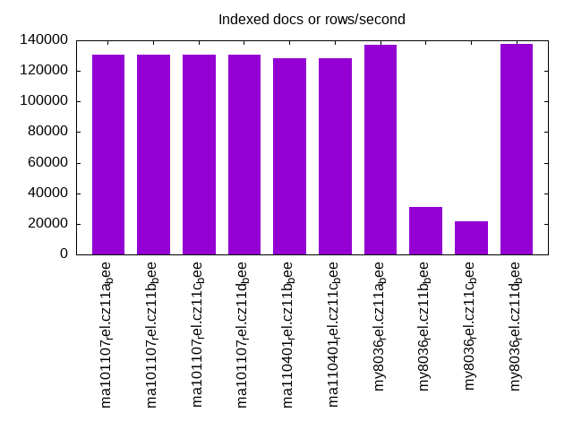
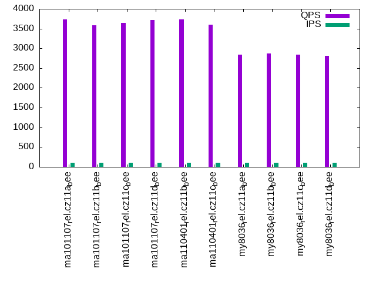
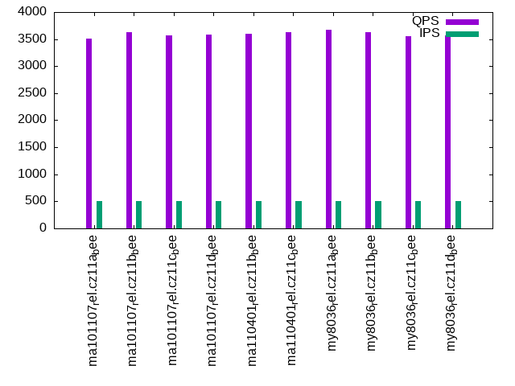

This is a report for the insert benchmark with 30M docs and 1 client(s). It is generated by scripts (bash, awk, sed) and Tufte might not be impressed. An overview of the insert benchmark is here and a short update is here. Below, by DBMS, I mean DBMS+version.config. An example is my8020.c10b40 where my means MySQL, 8020 is version 8.0.20 and c10b40 is the name for the configuration file.
The test server has 8 AMD cores, 16G RAM and an NVMe SSD. It is described here as the Beelink. The benchmark was run with 1 client and there were 1 or 3 connections per client (1 for queries or inserts without rate limits, 1+1 for rate limited inserts+deletes). It uses 1 table. It loads 30M rows per table without secondary indexes, creates 3 secondary indexes per table, then inserts 40m+10m rows per table with a delete per insert to avoid growing the table. It then does 6 read+write tests for 1800s each that do queries as fast as possible with 100,100,500,500,1000,1000 inserts/s and the same for deletes/s per client concurrent with the queries. The database is cached in memory. Clients and the DBMS share one server. The per-database configs are in the per-database subdirectories here.
The tested DBMS are:
The numbers are inserts/s for l.i0, l.i1 and l.i2, indexed docs (or rows) /s for l.x and queries/s for qr100, qp100 thru qr1000, qp1000" The values are the average rate over the entire test for inserts (IPS) and queries (QPS). The range of values for IPS and QPS is split into 3 parts: bottom 25%, middle 50%, top 25%. Values in the bottom 25% have a red background, values in the top 25% have a green background and values in the middle have no color. A gray background is used for values that can be ignored because the DBMS did not sustain the target insert rate. Red backgrounds are not used when the minimum value is within 80% of the max value.
| dbms | l.i0 | l.x | l.i1 | l.i2 | qr100 | qp100 | qr500 | qp500 | qr1000 | qp1000 |
|---|---|---|---|---|---|---|---|---|---|---|
| ma101107_rel.cz11a_bee | 83799 | 130435 | 19066 | 11136 | 3565 | 3729 | 3516 | 3818 | 3574 | 3824 |
| ma101107_rel.cz11b_bee | 83565 | 130435 | 17730 | 10941 | 3670 | 3588 | 3621 | 3791 | 3578 | 3768 |
| ma101107_rel.cz11c_bee | 84270 | 130435 | 17219 | 10799 | 3599 | 3644 | 3568 | 3724 | 3554 | 3919 |
| ma101107_rel.cz11d_bee | 83799 | 130435 | 19175 | 11198 | 3614 | 3720 | 3580 | 3802 | 3597 | 3807 |
| ma110401_rel.cz11b_bee | 82192 | 128206 | 17770 | 10799 | 3667 | 3728 | 3593 | 3835 | 3618 | 3836 |
| ma110401_rel.cz11c_bee | 83102 | 128206 | 17264 | 10707 | 3642 | 3597 | 3622 | 3849 | 3645 | 3836 |
| my8036_rel.cz11a_bee | 56604 | 136987 | 16835 | 8643 | 3642 | 2842 | 3674 | 2838 | 3723 | 2885 |
| my8036_rel.cz11b_bee | 56818 | 30832 | 13642 | 7027 | 3532 | 2876 | 3634 | 2823 | 3701 | 2942 |
| my8036_rel.cz11c_bee | 56180 | 21614 | 14909 | 7770 | 3580 | 2837 | 3558 | 2908 | 3677 | 2938 |
| my8036_rel.cz11d_bee | 57034 | 137615 | 16906 | 8650 | 3604 | 2808 | 3575 | 2830 | 3598 | 2867 |
This table has relative throughput, throughput for the DBMS relative to the DBMS in the first line, using the absolute throughput from the previous table. Values less than 0.95 have a yellow background. Values greater than 1.05 have a blue background.
| dbms | l.i0 | l.x | l.i1 | l.i2 | qr100 | qp100 | qr500 | qp500 | qr1000 | qp1000 |
|---|---|---|---|---|---|---|---|---|---|---|
| ma101107_rel.cz11a_bee | 1.00 | 1.00 | 1.00 | 1.00 | 1.00 | 1.00 | 1.00 | 1.00 | 1.00 | 1.00 |
| ma101107_rel.cz11b_bee | 1.00 | 1.00 | 0.93 | 0.98 | 1.03 | 0.96 | 1.03 | 0.99 | 1.00 | 0.99 |
| ma101107_rel.cz11c_bee | 1.01 | 1.00 | 0.90 | 0.97 | 1.01 | 0.98 | 1.01 | 0.98 | 0.99 | 1.02 |
| ma101107_rel.cz11d_bee | 1.00 | 1.00 | 1.01 | 1.01 | 1.01 | 1.00 | 1.02 | 1.00 | 1.01 | 1.00 |
| ma110401_rel.cz11b_bee | 0.98 | 0.98 | 0.93 | 0.97 | 1.03 | 1.00 | 1.02 | 1.00 | 1.01 | 1.00 |
| ma110401_rel.cz11c_bee | 0.99 | 0.98 | 0.91 | 0.96 | 1.02 | 0.96 | 1.03 | 1.01 | 1.02 | 1.00 |
| my8036_rel.cz11a_bee | 0.68 | 1.05 | 0.88 | 0.78 | 1.02 | 0.76 | 1.04 | 0.74 | 1.04 | 0.75 |
| my8036_rel.cz11b_bee | 0.68 | 0.24 | 0.72 | 0.63 | 0.99 | 0.77 | 1.03 | 0.74 | 1.04 | 0.77 |
| my8036_rel.cz11c_bee | 0.67 | 0.17 | 0.78 | 0.70 | 1.00 | 0.76 | 1.01 | 0.76 | 1.03 | 0.77 |
| my8036_rel.cz11d_bee | 0.68 | 1.06 | 0.89 | 0.78 | 1.01 | 0.75 | 1.02 | 0.74 | 1.01 | 0.75 |
This lists the average rate of inserts/s for the tests that do inserts concurrent with queries. For such tests the query rate is listed in the table above. The read+write tests are setup so that the insert rate should match the target rate every second. Cells that are not at least 95% of the target have a red background to indicate a failure to satisfy the target.
| dbms | qr100.L1 | qp100.L2 | qr500.L3 | qp500.L4 | qr1000.L5 | qp1000.L6 |
|---|---|---|---|---|---|---|
| ma101107_rel.cz11a_bee | 100 | 100 | 499 | 499 | 998 | 998 |
| ma101107_rel.cz11b_bee | 100 | 100 | 499 | 499 | 998 | 998 |
| ma101107_rel.cz11c_bee | 100 | 100 | 499 | 499 | 998 | 998 |
| ma101107_rel.cz11d_bee | 100 | 100 | 499 | 499 | 998 | 998 |
| ma110401_rel.cz11b_bee | 100 | 100 | 499 | 499 | 998 | 998 |
| ma110401_rel.cz11c_bee | 100 | 100 | 499 | 499 | 998 | 998 |
| my8036_rel.cz11a_bee | 100 | 100 | 499 | 499 | 998 | 998 |
| my8036_rel.cz11b_bee | 100 | 100 | 499 | 499 | 998 | 998 |
| my8036_rel.cz11c_bee | 100 | 100 | 499 | 499 | 998 | 998 |
| my8036_rel.cz11d_bee | 100 | 100 | 499 | 499 | 998 | 998 |
| target | 100 | 100 | 500 | 500 | 1000 | 1000 |
l.i0: load without secondary indexes. Graphs for performance per 1-second interval are here.
Average throughput:
Insert response time histogram: each cell has the percentage of responses that take <= the time in the header and max is the max response time in seconds. For the max column values in the top 25% of the range have a red background and in the bottom 25% of the range have a green background. The red background is not used when the min value is within 80% of the max value.
| dbms | 256us | 1ms | 4ms | 16ms | 64ms | 256ms | 1s | 4s | 16s | gt | max |
|---|---|---|---|---|---|---|---|---|---|---|---|
| ma101107_rel.cz11a_bee | 10.964 | 88.724 | 0.197 | 0.111 | 0.005 | 0.182 | |||||
| ma101107_rel.cz11b_bee | 9.943 | 89.744 | 0.197 | 0.111 | 0.005 | 0.229 | |||||
| ma101107_rel.cz11c_bee | 12.063 | 87.625 | 0.185 | 0.121 | 0.005 | 0.251 | |||||
| ma101107_rel.cz11d_bee | 10.120 | 89.568 | 0.184 | 0.122 | 0.005 | 0.190 | |||||
| ma110401_rel.cz11b_bee | 2.688 | 96.998 | 0.187 | 0.122 | 0.005 | 0.206 | |||||
| ma110401_rel.cz11c_bee | 4.374 | 95.313 | 0.190 | 0.119 | 0.005 | 0.204 | |||||
| my8036_rel.cz11a_bee | 99.413 | 0.455 | 0.131 | 0.001 | 0.086 | ||||||
| my8036_rel.cz11b_bee | 99.397 | 0.463 | 0.139 | 0.001 | 0.108 | ||||||
| my8036_rel.cz11c_bee | 99.395 | 0.448 | 0.151 | 0.005 | 0.095 | ||||||
| my8036_rel.cz11d_bee | 99.421 | 0.443 | 0.135 | 0.001 | 0.088 |
Performance metrics for the DBMS listed above. Some are normalized by throughput, others are not. Legend for results is here.
ips qps rps rmbps wps wmbps rpq rkbpq wpi wkbpi csps cpups cspq cpupq dbgb1 dbgb2 rss maxop p50 p99 tag 83799 0 0 0.0 266.2 21.6 0.000 0.000 0.003 0.264 11299 25.8 0.135 25 2.0 17.8 2.4 0.182 84803 71353 ma101107_rel.cz11a_bee 83565 0 0 0.0 262.2 21.5 0.000 0.000 0.003 0.264 11334 25.9 0.136 25 2.0 17.8 2.4 0.229 84504 70719 ma101107_rel.cz11b_bee 84270 0 0 0.0 54.6 21.5 0.000 0.000 0.001 0.262 11219 26.0 0.133 25 2.0 17.8 2.4 0.251 84902 70520 ma101107_rel.cz11c_bee 83799 0 0 0.0 265.5 21.6 0.000 0.000 0.003 0.263 11312 25.8 0.135 25 2.0 17.8 2.4 0.190 84506 70520 ma101107_rel.cz11d_bee 82192 0 0 0.0 252.5 21.1 0.000 0.000 0.003 0.262 11329 25.9 0.138 25 2.0 17.8 2.3 0.206 82810 69657 ma110401_rel.cz11b_bee 83102 0 0 0.0 52.5 21.2 0.000 0.000 0.001 0.262 11328 25.9 0.136 25 2.0 17.8 2.3 0.204 83805 68653 ma110401_rel.cz11c_bee 56604 0 0 0.0 247.7 18.9 0.000 0.000 0.004 0.342 6537 20.8 0.115 29 2.0 17.6 3.0 0.086 56637 52440 my8036_rel.cz11a_bee 56818 0 0 0.0 286.0 19.1 0.000 0.000 0.005 0.343 6881 21.6 0.121 30 2.0 17.6 3.1 0.108 57135 51742 my8036_rel.cz11b_bee 56180 0 0 0.0 220.5 18.9 0.000 0.000 0.004 0.344 7337 22.3 0.131 32 2.0 17.6 3.0 0.095 56835 50343 my8036_rel.cz11c_bee 57034 0 0 0.0 249.5 19.1 0.000 0.000 0.004 0.342 6573 20.7 0.115 29 2.0 17.6 3.1 0.088 57135 53341 my8036_rel.cz11d_bee
l.x: create secondary indexes.
Average throughput:
Performance metrics for the DBMS listed above. Some are normalized by throughput, others are not. Legend for results is here.
ips qps rps rmbps wps wmbps rpq rkbpq wpi wkbpi csps cpups cspq cpupq dbgb1 dbgb2 rss maxop p50 p99 tag 130435 0 0 0.0 823.0 111.7 0.000 0.000 0.006 0.877 3016 12.1 0.023 7 4.5 20.3 3.8 0.002 NA NA ma101107_rel.cz11a_bee 130435 0 0 0.0 817.1 111.0 0.000 0.000 0.006 0.872 3151 12.1 0.024 7 4.5 20.3 3.8 0.002 NA NA ma101107_rel.cz11b_bee 130435 0 0 0.0 272.3 111.0 0.000 0.000 0.002 0.872 3240 12.2 0.025 7 4.5 20.3 3.8 0.002 NA NA ma101107_rel.cz11c_bee 130435 0 0 0.0 814.4 110.7 0.000 0.000 0.006 0.869 3054 12.1 0.023 7 4.5 20.3 3.8 0.002 NA NA ma101107_rel.cz11d_bee 128206 0 0 0.0 807.7 109.8 0.000 0.000 0.006 0.877 2916 12.1 0.023 8 4.5 20.3 3.8 0.002 NA NA ma110401_rel.cz11b_bee 128206 0 0 0.0 270.9 109.8 0.000 0.000 0.002 0.877 3184 12.0 0.025 7 4.5 20.3 3.8 0.002 NA NA ma110401_rel.cz11c_bee 136987 0 705 44.6 2524.3 150.7 0.005 0.333 0.018 1.127 9433 43.3 0.069 25 4.5 20.1 5.3 0.003 NA NA my8036_rel.cz11a_bee 30832 0 156 9.9 820.3 36.1 0.005 0.328 0.027 1.200 5284 10.8 0.171 28 4.5 20.1 5.4 0.003 NA NA my8036_rel.cz11b_bee 21614 0 109 6.9 573.2 25.3 0.005 0.328 0.027 1.200 4920 7.9 0.228 29 4.5 20.1 5.4 0.003 NA NA my8036_rel.cz11c_bee 137615 0 705 44.6 2596.0 151.8 0.005 0.332 0.019 1.130 9518 43.7 0.069 25 4.5 20.1 5.3 0.003 NA NA my8036_rel.cz11d_bee
l.i1: continue load after secondary indexes created with 50 inserts per transaction. Graphs for performance per 1-second interval are here.
Average throughput:
Insert response time histogram: each cell has the percentage of responses that take <= the time in the header and max is the max response time in seconds. For the max column values in the top 25% of the range have a red background and in the bottom 25% of the range have a green background. The red background is not used when the min value is within 80% of the max value.
| dbms | 256us | 1ms | 4ms | 16ms | 64ms | 256ms | 1s | 4s | 16s | gt | max |
|---|---|---|---|---|---|---|---|---|---|---|---|
| ma101107_rel.cz11a_bee | 95.914 | 4.010 | 0.075 | nonzero | nonzero | 0.263 | |||||
| ma101107_rel.cz11b_bee | 94.287 | 5.220 | 0.489 | 0.004 | 0.235 | ||||||
| ma101107_rel.cz11c_bee | 94.149 | 5.084 | 0.751 | 0.015 | nonzero | 0.314 | |||||
| ma101107_rel.cz11d_bee | 95.916 | 4.012 | 0.071 | nonzero | 0.117 | ||||||
| ma110401_rel.cz11b_bee | 94.301 | 5.211 | 0.485 | 0.004 | 0.189 | ||||||
| ma110401_rel.cz11c_bee | 93.966 | 5.289 | 0.732 | 0.012 | 0.001 | 0.451 | |||||
| my8036_rel.cz11a_bee | 95.888 | 3.954 | 0.156 | 0.002 | 0.105 | ||||||
| my8036_rel.cz11b_bee | 88.756 | 10.108 | 1.125 | 0.011 | 0.191 | ||||||
| my8036_rel.cz11c_bee | 91.647 | 7.725 | 0.579 | 0.044 | 0.004 | 0.001 | 1.066 | ||||
| my8036_rel.cz11d_bee | 95.949 | 3.895 | 0.154 | 0.002 | 0.104 |
Delete response time histogram: each cell has the percentage of responses that take <= the time in the header and max is the max response time in seconds. For the max column values in the top 25% of the range have a red background and in the bottom 25% of the range have a green background. The red background is not used when the min value is within 80% of the max value.
| dbms | 256us | 1ms | 4ms | 16ms | 64ms | 256ms | 1s | 4s | 16s | gt | max |
|---|---|---|---|---|---|---|---|---|---|---|---|
| ma101107_rel.cz11a_bee | 97.312 | 2.649 | 0.039 | nonzero | 0.255 | ||||||
| ma101107_rel.cz11b_bee | 96.131 | 3.470 | 0.396 | 0.003 | 0.234 | ||||||
| ma101107_rel.cz11c_bee | 95.916 | 3.458 | 0.613 | 0.013 | nonzero | 0.269 | |||||
| ma101107_rel.cz11d_bee | 97.301 | 2.656 | 0.043 | 0.063 | |||||||
| ma110401_rel.cz11b_bee | 96.023 | 3.587 | 0.388 | 0.003 | 0.188 | ||||||
| ma110401_rel.cz11c_bee | 95.709 | 3.675 | 0.605 | 0.011 | nonzero | 0.424 | |||||
| my8036_rel.cz11a_bee | 97.676 | 2.274 | 0.049 | 0.001 | 0.105 | ||||||
| my8036_rel.cz11b_bee | 92.513 | 6.842 | 0.638 | 0.007 | 0.105 | ||||||
| my8036_rel.cz11c_bee | 94.974 | 4.752 | 0.254 | 0.016 | 0.004 | 0.001 | 1.049 | ||||
| my8036_rel.cz11d_bee | 97.608 | 2.343 | 0.047 | 0.002 | 0.104 |
Performance metrics for the DBMS listed above. Some are normalized by throughput, others are not. Legend for results is here.
ips qps rps rmbps wps wmbps rpq rkbpq wpi wkbpi csps cpups cspq cpupq dbgb1 dbgb2 rss maxop p50 p99 tag 19066 0 754 2.9 2800.7 102.6 0.040 0.158 0.147 5.511 50067 34.8 2.626 146 6.2 22.0 6.1 0.263 20328 5294 ma101107_rel.cz11a_bee 17730 0 698 2.7 2643.1 95.4 0.039 0.158 0.149 5.509 46805 32.9 2.640 148 6.2 22.0 6.1 0.235 18430 5294 ma101107_rel.cz11b_bee 17219 0 677 2.6 2422.3 92.4 0.039 0.157 0.141 5.496 42314 32.5 2.457 151 6.1 22.0 6.1 0.314 17281 4897 ma101107_rel.cz11c_bee 19175 0 756 3.0 2809.4 103.0 0.039 0.158 0.147 5.502 50335 34.9 2.625 146 6.2 22.0 6.1 0.117 20427 5294 ma101107_rel.cz11d_bee 17770 0 685 2.7 2634.6 95.1 0.039 0.154 0.148 5.483 46630 32.8 2.624 148 6.2 22.0 6.1 0.189 18380 5194 ma110401_rel.cz11b_bee 17264 0 663 2.6 2422.0 92.6 0.038 0.154 0.140 5.492 42459 32.3 2.459 150 6.2 22.0 6.1 0.451 17780 4895 ma110401_rel.cz11c_bee 16835 0 61 1.0 2782.0 102.0 0.004 0.058 0.165 6.206 38919 38.5 2.312 183 6.5 22.4 7.9 0.105 17580 5244 my8036_rel.cz11a_bee 13642 0 40 0.6 1602.6 60.8 0.003 0.047 0.117 4.563 34147 37.2 2.503 218 6.1 21.8 7.3 0.191 14041 3995 my8036_rel.cz11b_bee 14909 0 6 0.3 982.0 48.3 0.000 0.018 0.066 3.314 33407 36.8 2.241 197 6.3 22.1 6.9 1.066 16432 2547 my8036_rel.cz11c_bee 16906 0 61 1.0 2752.6 101.3 0.004 0.058 0.163 6.135 38939 38.6 2.303 183 6.5 22.4 7.9 0.104 17580 5244 my8036_rel.cz11d_bee
l.i2: continue load after secondary indexes created with 5 inserts per transaction. Graphs for performance per 1-second interval are here.
Average throughput:
Insert response time histogram: each cell has the percentage of responses that take <= the time in the header and max is the max response time in seconds. For the max column values in the top 25% of the range have a red background and in the bottom 25% of the range have a green background. The red background is not used when the min value is within 80% of the max value.
| dbms | 256us | 1ms | 4ms | 16ms | 64ms | 256ms | 1s | 4s | 16s | gt | max |
|---|---|---|---|---|---|---|---|---|---|---|---|
| ma101107_rel.cz11a_bee | 0.384 | 99.465 | 0.131 | 0.021 | nonzero | nonzero | 0.065 | ||||
| ma101107_rel.cz11b_bee | 0.518 | 99.260 | 0.117 | 0.102 | 0.002 | 0.063 | |||||
| ma101107_rel.cz11c_bee | 0.344 | 99.411 | 0.113 | 0.122 | 0.009 | nonzero | 0.106 | ||||
| ma101107_rel.cz11d_bee | 0.428 | 99.415 | 0.135 | 0.021 | 0.001 | 0.063 | |||||
| ma110401_rel.cz11b_bee | 0.358 | 99.424 | 0.111 | 0.104 | 0.003 | nonzero | 0.064 | ||||
| ma110401_rel.cz11c_bee | 0.708 | 99.044 | 0.116 | 0.124 | 0.008 | nonzero | 0.093 | ||||
| my8036_rel.cz11a_bee | 99.384 | 0.360 | 0.254 | 0.002 | nonzero | 0.102 | |||||
| my8036_rel.cz11b_bee | 98.023 | 0.884 | 0.997 | 0.093 | 0.002 | 0.107 | |||||
| my8036_rel.cz11c_bee | 98.793 | 0.524 | 0.656 | 0.025 | 0.002 | 0.118 | |||||
| my8036_rel.cz11d_bee | 99.375 | 0.369 | 0.254 | 0.002 | 0.001 | 0.102 |
Delete response time histogram: each cell has the percentage of responses that take <= the time in the header and max is the max response time in seconds. For the max column values in the top 25% of the range have a red background and in the bottom 25% of the range have a green background. The red background is not used when the min value is within 80% of the max value.
| dbms | 256us | 1ms | 4ms | 16ms | 64ms | 256ms | 1s | 4s | 16s | gt | max |
|---|---|---|---|---|---|---|---|---|---|---|---|
| ma101107_rel.cz11a_bee | 3.060 | 96.786 | 0.134 | 0.020 | nonzero | nonzero | 0.065 | ||||
| ma101107_rel.cz11b_bee | 2.748 | 97.043 | 0.113 | 0.094 | 0.002 | 0.063 | |||||
| ma101107_rel.cz11c_bee | 3.082 | 96.685 | 0.112 | 0.113 | 0.008 | nonzero | 0.106 | ||||
| ma101107_rel.cz11d_bee | 2.951 | 96.891 | 0.137 | 0.021 | 0.001 | 0.063 | |||||
| ma110401_rel.cz11b_bee | 1.129 | 98.652 | 0.117 | 0.098 | 0.003 | nonzero | 0.064 | ||||
| ma110401_rel.cz11c_bee | 1.406 | 98.354 | 0.116 | 0.117 | 0.007 | nonzero | 0.067 | ||||
| my8036_rel.cz11a_bee | 99.545 | 0.204 | 0.249 | 0.002 | nonzero | 0.102 | |||||
| my8036_rel.cz11b_bee | 98.408 | 0.542 | 0.965 | 0.081 | 0.003 | 0.102 | |||||
| my8036_rel.cz11c_bee | 99.037 | 0.280 | 0.661 | 0.021 | 0.001 | 0.108 | |||||
| my8036_rel.cz11d_bee | 99.547 | 0.204 | 0.246 | 0.002 | 0.001 | 0.102 |
Performance metrics for the DBMS listed above. Some are normalized by throughput, others are not. Legend for results is here.
ips qps rps rmbps wps wmbps rpq rkbpq wpi wkbpi csps cpups cspq cpupq dbgb1 dbgb2 rss maxop p50 p99 tag 11136 0 1774 6.9 1327.5 50.6 0.159 0.637 0.119 4.652 62221 35.3 5.587 254 6.2 22.0 6.1 0.065 11163 9794 ma101107_rel.cz11a_bee 10941 0 1744 6.8 1335.0 50.0 0.159 0.638 0.122 4.677 61253 35.0 5.599 256 6.2 22.0 6.1 0.063 11043 9394 ma101107_rel.cz11b_bee 10799 0 1722 6.7 1264.2 49.2 0.159 0.638 0.117 4.668 58906 34.7 5.455 257 6.1 22.0 6.1 0.106 11038 8365 ma101107_rel.cz11c_bee 11198 0 1786 7.0 1355.9 51.5 0.159 0.638 0.121 4.712 62617 35.4 5.592 253 6.2 22.0 6.1 0.063 11223 10149 ma101107_rel.cz11d_bee 10799 0 1719 6.7 1320.2 49.4 0.159 0.637 0.122 4.680 60542 34.8 5.606 258 6.2 22.0 6.1 0.064 10913 9004 ma110401_rel.cz11b_bee 10707 0 1702 6.6 1253.1 48.8 0.159 0.636 0.117 4.666 58604 34.6 5.474 259 6.2 22.0 6.1 0.093 10918 8426 ma110401_rel.cz11c_bee 8643 0 0 0.0 1481.9 50.5 0.000 0.000 0.171 5.978 51714 35.6 5.983 330 6.5 22.4 7.9 0.102 8659 7781 my8036_rel.cz11a_bee 7027 0 0 0.0 1429.2 41.4 0.000 0.000 0.203 6.034 45076 36.5 6.414 416 6.1 21.8 7.3 0.107 7062 5594 my8036_rel.cz11b_bee 7770 0 0 0.0 978.9 30.4 0.000 0.000 0.126 4.009 46777 34.0 6.020 350 6.3 22.1 6.8 0.118 7841 6209 my8036_rel.cz11c_bee 8650 0 0 0.0 1469.8 50.2 0.000 0.000 0.170 5.939 51900 35.6 6.000 329 6.5 22.4 7.9 0.102 8669 7771 my8036_rel.cz11d_bee
qr100.L1: range queries with 100 insert/s per client. Graphs for performance per 1-second interval are here.
Average throughput:
Query response time histogram: each cell has the percentage of responses that take <= the time in the header and max is the max response time in seconds. For max values in the top 25% of the range have a red background and in the bottom 25% of the range have a green background. The red background is not used when the min value is within 80% of the max value.
| dbms | 256us | 1ms | 4ms | 16ms | 64ms | 256ms | 1s | 4s | 16s | gt | max |
|---|---|---|---|---|---|---|---|---|---|---|---|
| ma101107_rel.cz11a_bee | 54.960 | 45.040 | nonzero | nonzero | 0.005 | ||||||
| ma101107_rel.cz11b_bee | 59.643 | 40.356 | 0.001 | nonzero | 0.012 | ||||||
| ma101107_rel.cz11c_bee | 56.064 | 43.935 | nonzero | nonzero | nonzero | 0.016 | |||||
| ma101107_rel.cz11d_bee | 57.715 | 42.284 | nonzero | 0.004 | |||||||
| ma110401_rel.cz11b_bee | 60.353 | 39.646 | nonzero | nonzero | 0.004 | ||||||
| ma110401_rel.cz11c_bee | 59.249 | 40.751 | nonzero | nonzero | 0.014 | ||||||
| my8036_rel.cz11a_bee | 59.842 | 40.157 | 0.001 | nonzero | 0.005 | ||||||
| my8036_rel.cz11b_bee | 53.783 | 46.217 | nonzero | nonzero | 0.007 | ||||||
| my8036_rel.cz11c_bee | 56.109 | 43.891 | 0.001 | nonzero | nonzero | 0.050 | |||||
| my8036_rel.cz11d_bee | 56.269 | 43.730 | 0.001 | nonzero | 0.005 |
Insert response time histogram: each cell has the percentage of responses that take <= the time in the header and max is the max response time in seconds. For max values in the top 25% of the range have a red background and in the bottom 25% of the range have a green background. The red background is not used when the min value is within 80% of the max value.
| dbms | 256us | 1ms | 4ms | 16ms | 64ms | 256ms | 1s | 4s | 16s | gt | max |
|---|---|---|---|---|---|---|---|---|---|---|---|
| ma101107_rel.cz11a_bee | 53.306 | 46.667 | 0.028 | 0.024 | |||||||
| ma101107_rel.cz11b_bee | 53.194 | 46.778 | 0.028 | 0.044 | |||||||
| ma101107_rel.cz11c_bee | 53.028 | 46.972 | 0.012 | ||||||||
| ma101107_rel.cz11d_bee | 53.278 | 46.694 | 0.028 | 0.026 | |||||||
| ma110401_rel.cz11b_bee | 53.250 | 46.722 | 0.028 | 0.020 | |||||||
| ma110401_rel.cz11c_bee | 53.306 | 46.694 | 0.012 | ||||||||
| my8036_rel.cz11a_bee | 98.889 | 1.083 | 0.028 | 0.026 | |||||||
| my8036_rel.cz11b_bee | 99.528 | 0.472 | 0.015 | ||||||||
| my8036_rel.cz11c_bee | 99.278 | 0.667 | 0.028 | 0.028 | 0.085 | ||||||
| my8036_rel.cz11d_bee | 99.472 | 0.528 | 0.014 |
Delete response time histogram: each cell has the percentage of responses that take <= the time in the header and max is the max response time in seconds. For max values in the top 25% of the range have a red background and in the bottom 25% of the range have a green background. The red background is not used when the min value is within 80% of the max value.
| dbms | 256us | 1ms | 4ms | 16ms | 64ms | 256ms | 1s | 4s | 16s | gt | max |
|---|---|---|---|---|---|---|---|---|---|---|---|
| ma101107_rel.cz11a_bee | 53.361 | 46.639 | 0.012 | ||||||||
| ma101107_rel.cz11b_bee | 53.222 | 46.750 | 0.028 | 0.017 | |||||||
| ma101107_rel.cz11c_bee | 53.028 | 46.972 | 0.012 | ||||||||
| ma101107_rel.cz11d_bee | 53.278 | 46.722 | 0.012 | ||||||||
| ma110401_rel.cz11b_bee | 53.306 | 46.694 | 0.012 | ||||||||
| ma110401_rel.cz11c_bee | 53.278 | 46.722 | 0.013 | ||||||||
| my8036_rel.cz11a_bee | 99.028 | 0.944 | 0.028 | 0.019 | |||||||
| my8036_rel.cz11b_bee | 99.667 | 0.333 | 0.013 | ||||||||
| my8036_rel.cz11c_bee | 99.417 | 0.472 | 0.056 | 0.056 | 0.091 | ||||||
| my8036_rel.cz11d_bee | 99.500 | 0.500 | 0.015 |
Performance metrics for the DBMS listed above. Some are normalized by throughput, others are not. Legend for results is here.
ips qps rps rmbps wps wmbps rpq rkbpq wpi wkbpi csps cpups cspq cpupq dbgb1 dbgb2 rss maxop p50 p99 tag 100 3565 3 0.0 8.0 0.3 0.001 0.004 0.080 2.955 13852 12.8 3.886 287 6.2 22.0 6.1 0.005 3532 3388 ma101107_rel.cz11a_bee 100 3670 3 0.0 8.1 0.3 0.001 0.003 0.082 2.954 14267 12.8 3.888 279 6.2 22.0 6.1 0.012 3627 3452 ma101107_rel.cz11b_bee 100 3599 3 0.0 8.1 0.3 0.001 0.003 0.081 2.963 13976 12.9 3.884 287 6.1 22.0 6.1 0.016 3564 3404 ma101107_rel.cz11c_bee 100 3614 3 0.0 8.0 0.3 0.001 0.004 0.080 2.954 14052 12.9 3.888 286 6.2 22.0 6.1 0.004 3595 3436 ma101107_rel.cz11d_bee 100 3667 3 0.0 8.2 0.3 0.001 0.003 0.082 2.944 14247 13.0 3.885 284 6.2 22.0 6.1 0.004 3644 3484 ma110401_rel.cz11b_bee 100 3642 3 0.0 8.1 0.3 0.001 0.003 0.081 2.962 14149 12.8 3.885 281 6.2 22.0 6.1 0.014 3612 3468 ma110401_rel.cz11c_bee 100 3642 0 0.0 165.3 4.2 0.000 0.000 1.657 42.812 14954 13.2 4.105 290 6.5 22.4 7.9 0.005 3612 3436 my8036_rel.cz11a_bee 100 3532 0 0.0 36.6 0.8 0.000 0.000 0.367 7.985 14170 12.9 4.012 292 6.1 21.8 7.3 0.007 3516 3388 my8036_rel.cz11b_bee 100 3580 0 0.0 111.3 2.0 0.000 0.000 1.115 20.356 14750 13.6 4.120 304 6.3 22.1 6.8 0.050 3547 3356 my8036_rel.cz11c_bee 100 3604 0 0.0 152.7 3.9 0.000 0.000 1.530 39.549 14767 13.0 4.097 289 6.5 22.4 7.9 0.005 3564 3356 my8036_rel.cz11d_bee
qp100.L2: point queries with 100 insert/s per client. Graphs for performance per 1-second interval are here.
Average throughput:
Query response time histogram: each cell has the percentage of responses that take <= the time in the header and max is the max response time in seconds. For max values in the top 25% of the range have a red background and in the bottom 25% of the range have a green background. The red background is not used when the min value is within 80% of the max value.
| dbms | 256us | 1ms | 4ms | 16ms | 64ms | 256ms | 1s | 4s | 16s | gt | max |
|---|---|---|---|---|---|---|---|---|---|---|---|
| ma101107_rel.cz11a_bee | 74.190 | 25.809 | 0.002 | nonzero | 0.005 | ||||||
| ma101107_rel.cz11b_bee | 64.672 | 35.326 | 0.002 | nonzero | 0.005 | ||||||
| ma101107_rel.cz11c_bee | 65.692 | 34.307 | 0.001 | nonzero | 0.005 | ||||||
| ma101107_rel.cz11d_bee | 65.846 | 34.152 | 0.001 | nonzero | 0.005 | ||||||
| ma110401_rel.cz11b_bee | 77.686 | 22.312 | 0.002 | nonzero | 0.007 | ||||||
| ma110401_rel.cz11c_bee | 63.743 | 36.256 | 0.001 | nonzero | 0.004 | ||||||
| my8036_rel.cz11a_bee | 10.870 | 89.128 | 0.002 | nonzero | 0.004 | ||||||
| my8036_rel.cz11b_bee | 13.687 | 86.311 | 0.001 | nonzero | 0.005 | ||||||
| my8036_rel.cz11c_bee | 12.590 | 87.408 | 0.002 | 0.003 | |||||||
| my8036_rel.cz11d_bee | 9.534 | 90.464 | 0.002 | 0.004 |
Insert response time histogram: each cell has the percentage of responses that take <= the time in the header and max is the max response time in seconds. For max values in the top 25% of the range have a red background and in the bottom 25% of the range have a green background. The red background is not used when the min value is within 80% of the max value.
| dbms | 256us | 1ms | 4ms | 16ms | 64ms | 256ms | 1s | 4s | 16s | gt | max |
|---|---|---|---|---|---|---|---|---|---|---|---|
| ma101107_rel.cz11a_bee | 53.194 | 46.806 | 0.012 | ||||||||
| ma101107_rel.cz11b_bee | 53.000 | 47.000 | 0.012 | ||||||||
| ma101107_rel.cz11c_bee | 53.417 | 46.583 | 0.012 | ||||||||
| ma101107_rel.cz11d_bee | 52.944 | 47.056 | 0.012 | ||||||||
| ma110401_rel.cz11b_bee | 53.306 | 46.694 | 0.012 | ||||||||
| ma110401_rel.cz11c_bee | 53.000 | 47.000 | 0.012 | ||||||||
| my8036_rel.cz11a_bee | 99.639 | 0.361 | 0.016 | ||||||||
| my8036_rel.cz11b_bee | 99.694 | 0.306 | 0.009 | ||||||||
| my8036_rel.cz11c_bee | 99.306 | 0.667 | 0.028 | 0.018 | |||||||
| my8036_rel.cz11d_bee | 99.722 | 0.250 | 0.028 | 0.021 |
Delete response time histogram: each cell has the percentage of responses that take <= the time in the header and max is the max response time in seconds. For max values in the top 25% of the range have a red background and in the bottom 25% of the range have a green background. The red background is not used when the min value is within 80% of the max value.
| dbms | 256us | 1ms | 4ms | 16ms | 64ms | 256ms | 1s | 4s | 16s | gt | max |
|---|---|---|---|---|---|---|---|---|---|---|---|
| ma101107_rel.cz11a_bee | 53.333 | 46.667 | 0.012 | ||||||||
| ma101107_rel.cz11b_bee | 53.083 | 46.917 | 0.012 | ||||||||
| ma101107_rel.cz11c_bee | 53.417 | 46.583 | 0.012 | ||||||||
| ma101107_rel.cz11d_bee | 53.000 | 47.000 | 0.012 | ||||||||
| ma110401_rel.cz11b_bee | 53.333 | 46.667 | 0.012 | ||||||||
| ma110401_rel.cz11c_bee | 53.111 | 46.889 | 0.012 | ||||||||
| my8036_rel.cz11a_bee | 99.806 | 0.194 | 0.008 | ||||||||
| my8036_rel.cz11b_bee | 99.750 | 0.250 | 0.009 | ||||||||
| my8036_rel.cz11c_bee | 99.472 | 0.528 | 0.013 | ||||||||
| my8036_rel.cz11d_bee | 99.806 | 0.194 | 0.014 |
Performance metrics for the DBMS listed above. Some are normalized by throughput, others are not. Legend for results is here.
ips qps rps rmbps wps wmbps rpq rkbpq wpi wkbpi csps cpups cspq cpupq dbgb1 dbgb2 rss maxop p50 p99 tag 100 3729 3 0.0 19.6 0.6 0.001 0.003 0.196 6.478 15342 14.1 4.114 302 6.2 22.0 6.1 0.005 3548 3324 ma101107_rel.cz11a_bee 100 3588 3 0.0 19.9 0.6 0.001 0.004 0.200 6.476 14763 14.3 4.115 319 6.2 22.0 6.1 0.005 3484 3308 ma101107_rel.cz11b_bee 100 3644 3 0.0 25.6 0.8 0.001 0.003 0.257 8.239 14988 14.3 4.114 314 6.1 22.0 6.1 0.005 3500 3324 ma101107_rel.cz11c_bee 100 3720 3 0.0 13.8 0.5 0.001 0.003 0.138 4.716 15277 14.1 4.107 303 6.2 22.0 6.1 0.005 3532 3324 ma101107_rel.cz11d_bee 100 3728 3 0.0 14.0 0.5 0.001 0.003 0.140 4.715 15297 14.3 4.103 307 6.2 22.0 6.1 0.007 3580 3355 ma110401_rel.cz11b_bee 100 3597 3 0.0 19.8 0.6 0.001 0.003 0.198 6.484 14778 14.1 4.108 314 6.2 22.0 6.1 0.004 3500 3307 ma110401_rel.cz11c_bee 100 2842 0 0.0 40.9 1.1 0.000 0.000 0.409 10.861 12111 13.3 4.261 374 6.5 22.4 7.9 0.004 2748 2605 my8036_rel.cz11a_bee 100 2876 0 0.0 14.2 0.3 0.000 0.000 0.142 2.970 12190 13.3 4.238 370 6.1 21.8 7.3 0.005 2750 2621 my8036_rel.cz11b_bee 100 2837 0 0.0 19.1 0.3 0.000 0.000 0.191 2.984 12066 13.1 4.253 369 6.3 22.1 6.8 0.003 2733 2589 my8036_rel.cz11c_bee 100 2808 0 0.0 42.5 1.1 0.000 0.000 0.426 11.402 11973 13.3 4.264 379 6.5 22.4 7.9 0.004 2717 2589 my8036_rel.cz11d_bee
qr500.L3: range queries with 500 insert/s per client. Graphs for performance per 1-second interval are here.
Average throughput:
Query response time histogram: each cell has the percentage of responses that take <= the time in the header and max is the max response time in seconds. For max values in the top 25% of the range have a red background and in the bottom 25% of the range have a green background. The red background is not used when the min value is within 80% of the max value.
| dbms | 256us | 1ms | 4ms | 16ms | 64ms | 256ms | 1s | 4s | 16s | gt | max |
|---|---|---|---|---|---|---|---|---|---|---|---|
| ma101107_rel.cz11a_bee | 51.804 | 48.195 | 0.001 | nonzero | 0.004 | ||||||
| ma101107_rel.cz11b_bee | 57.650 | 42.348 | 0.001 | nonzero | 0.012 | ||||||
| ma101107_rel.cz11c_bee | 55.026 | 44.973 | 0.001 | nonzero | 0.004 | ||||||
| ma101107_rel.cz11d_bee | 55.796 | 44.203 | 0.001 | nonzero | 0.006 | ||||||
| ma110401_rel.cz11b_bee | 56.843 | 43.156 | 0.001 | 0.003 | |||||||
| ma110401_rel.cz11c_bee | 58.087 | 41.912 | 0.001 | nonzero | 0.010 | ||||||
| my8036_rel.cz11a_bee | 60.665 | 39.334 | 0.001 | 0.003 | |||||||
| my8036_rel.cz11b_bee | 58.989 | 41.010 | 0.001 | nonzero | 0.013 | ||||||
| my8036_rel.cz11c_bee | 53.490 | 46.507 | 0.002 | 0.001 | nonzero | 0.052 | |||||
| my8036_rel.cz11d_bee | 54.741 | 45.258 | 0.001 | nonzero | 0.005 |
Insert response time histogram: each cell has the percentage of responses that take <= the time in the header and max is the max response time in seconds. For max values in the top 25% of the range have a red background and in the bottom 25% of the range have a green background. The red background is not used when the min value is within 80% of the max value.
| dbms | 256us | 1ms | 4ms | 16ms | 64ms | 256ms | 1s | 4s | 16s | gt | max |
|---|---|---|---|---|---|---|---|---|---|---|---|
| ma101107_rel.cz11a_bee | 90.061 | 9.939 | 0.012 | ||||||||
| ma101107_rel.cz11b_bee | 90.128 | 9.872 | 0.012 | ||||||||
| ma101107_rel.cz11c_bee | 90.017 | 9.983 | 0.013 | ||||||||
| ma101107_rel.cz11d_bee | 90.106 | 9.894 | 0.012 | ||||||||
| ma110401_rel.cz11b_bee | 90.122 | 9.878 | 0.012 | ||||||||
| ma110401_rel.cz11c_bee | 90.111 | 9.889 | 0.014 | ||||||||
| my8036_rel.cz11a_bee | 98.939 | 1.044 | 0.017 | 0.026 | |||||||
| my8036_rel.cz11b_bee | 99.183 | 0.789 | 0.028 | 0.037 | |||||||
| my8036_rel.cz11c_bee | 98.872 | 0.950 | 0.150 | 0.028 | 0.081 | ||||||
| my8036_rel.cz11d_bee | 99.194 | 0.789 | 0.017 | 0.025 |
Delete response time histogram: each cell has the percentage of responses that take <= the time in the header and max is the max response time in seconds. For max values in the top 25% of the range have a red background and in the bottom 25% of the range have a green background. The red background is not used when the min value is within 80% of the max value.
| dbms | 256us | 1ms | 4ms | 16ms | 64ms | 256ms | 1s | 4s | 16s | gt | max |
|---|---|---|---|---|---|---|---|---|---|---|---|
| ma101107_rel.cz11a_bee | 90.511 | 9.489 | 0.012 | ||||||||
| ma101107_rel.cz11b_bee | 90.550 | 9.450 | 0.012 | ||||||||
| ma101107_rel.cz11c_bee | 90.600 | 9.400 | 0.013 | ||||||||
| ma101107_rel.cz11d_bee | 90.539 | 9.461 | 0.012 | ||||||||
| ma110401_rel.cz11b_bee | 90.583 | 9.417 | 0.014 | ||||||||
| ma110401_rel.cz11c_bee | 90.544 | 9.456 | 0.013 | ||||||||
| my8036_rel.cz11a_bee | 99.528 | 0.461 | 0.011 | 0.024 | |||||||
| my8036_rel.cz11b_bee | 99.506 | 0.433 | 0.061 | 0.048 | |||||||
| my8036_rel.cz11c_bee | 99.317 | 0.522 | 0.156 | 0.006 | 0.075 | ||||||
| my8036_rel.cz11d_bee | 99.711 | 0.278 | 0.011 | 0.023 |
Performance metrics for the DBMS listed above. Some are normalized by throughput, others are not. Legend for results is here.
ips qps rps rmbps wps wmbps rpq rkbpq wpi wkbpi csps cpups cspq cpupq dbgb1 dbgb2 rss maxop p50 p99 tag 499 3516 17 0.1 2.6 0.6 0.005 0.020 0.005 1.143 13857 13.7 3.941 312 6.2 22.0 6.1 0.004 3500 3372 ma101107_rel.cz11a_bee 499 3621 17 0.1 7.4 0.7 0.005 0.019 0.015 1.433 14282 13.8 3.944 305 6.2 22.0 6.1 0.012 3595 3452 ma101107_rel.cz11b_bee 499 3568 18 0.1 4.5 0.6 0.005 0.020 0.009 1.260 14070 13.7 3.943 307 6.1 22.0 6.1 0.004 3548 3420 ma101107_rel.cz11c_bee 499 3580 17 0.1 2.6 0.6 0.005 0.019 0.005 1.142 14098 14.0 3.938 313 6.2 22.0 6.1 0.006 3548 3404 ma101107_rel.cz11d_bee 499 3593 17 0.1 3.1 0.6 0.005 0.019 0.006 1.165 14154 13.6 3.939 303 6.2 22.0 6.1 0.003 3580 3452 ma110401_rel.cz11b_bee 499 3622 17 0.1 8.5 0.7 0.005 0.019 0.017 1.499 14286 13.8 3.945 305 6.2 22.0 6.1 0.010 3596 3468 ma110401_rel.cz11c_bee 499 3674 0 0.0 90.4 2.8 0.000 0.000 0.181 5.826 15439 14.2 4.203 309 6.5 22.4 7.9 0.003 3643 3420 my8036_rel.cz11a_bee 499 3634 0 0.0 128.2 3.3 0.000 0.000 0.257 6.864 15551 14.4 4.280 317 6.1 21.8 7.3 0.013 3596 3404 my8036_rel.cz11b_bee 499 3558 0 0.0 154.7 3.4 0.000 0.000 0.310 6.927 15506 15.1 4.358 340 6.3 22.1 6.8 0.052 3516 3324 my8036_rel.cz11c_bee 499 3575 0 0.0 92.0 2.9 0.000 0.000 0.184 5.940 15070 14.1 4.215 316 6.5 22.4 7.9 0.005 3548 3356 my8036_rel.cz11d_bee
qp500.L4: point queries with 500 insert/s per client. Graphs for performance per 1-second interval are here.
Average throughput:
Query response time histogram: each cell has the percentage of responses that take <= the time in the header and max is the max response time in seconds. For max values in the top 25% of the range have a red background and in the bottom 25% of the range have a green background. The red background is not used when the min value is within 80% of the max value.
| dbms | 256us | 1ms | 4ms | 16ms | 64ms | 256ms | 1s | 4s | 16s | gt | max |
|---|---|---|---|---|---|---|---|---|---|---|---|
| ma101107_rel.cz11a_bee | 79.062 | 20.937 | 0.002 | nonzero | 0.005 | ||||||
| ma101107_rel.cz11b_bee | 75.394 | 24.604 | 0.002 | nonzero | 0.009 | ||||||
| ma101107_rel.cz11c_bee | 72.279 | 27.719 | 0.002 | nonzero | nonzero | 0.018 | |||||
| ma101107_rel.cz11d_bee | 75.600 | 24.397 | 0.003 | nonzero | 0.009 | ||||||
| ma110401_rel.cz11b_bee | 81.114 | 18.884 | 0.002 | nonzero | 0.005 | ||||||
| ma110401_rel.cz11c_bee | 81.591 | 18.407 | 0.002 | nonzero | 0.005 | ||||||
| my8036_rel.cz11a_bee | 11.394 | 88.601 | 0.004 | nonzero | 0.007 | ||||||
| my8036_rel.cz11b_bee | 9.756 | 90.240 | 0.004 | nonzero | nonzero | 0.028 | |||||
| my8036_rel.cz11c_bee | 18.219 | 81.776 | 0.005 | nonzero | 0.007 | ||||||
| my8036_rel.cz11d_bee | 11.495 | 88.500 | 0.005 | nonzero | 0.006 |
Insert response time histogram: each cell has the percentage of responses that take <= the time in the header and max is the max response time in seconds. For max values in the top 25% of the range have a red background and in the bottom 25% of the range have a green background. The red background is not used when the min value is within 80% of the max value.
| dbms | 256us | 1ms | 4ms | 16ms | 64ms | 256ms | 1s | 4s | 16s | gt | max |
|---|---|---|---|---|---|---|---|---|---|---|---|
| ma101107_rel.cz11a_bee | 90.061 | 9.939 | 0.013 | ||||||||
| ma101107_rel.cz11b_bee | 90.100 | 9.894 | 0.006 | 0.022 | |||||||
| ma101107_rel.cz11c_bee | 90.017 | 9.950 | 0.033 | 0.030 | |||||||
| ma101107_rel.cz11d_bee | 90.000 | 10.000 | 0.013 | ||||||||
| ma110401_rel.cz11b_bee | 89.967 | 10.033 | 0.014 | ||||||||
| ma110401_rel.cz11c_bee | 90.006 | 9.983 | 0.011 | 0.023 | |||||||
| my8036_rel.cz11a_bee | 99.017 | 0.950 | 0.028 | 0.006 | 0.105 | ||||||
| my8036_rel.cz11b_bee | 98.556 | 1.317 | 0.128 | 0.062 | |||||||
| my8036_rel.cz11c_bee | 98.828 | 1.022 | 0.117 | 0.033 | 0.086 | ||||||
| my8036_rel.cz11d_bee | 98.861 | 1.128 | 0.011 | 0.025 |
Delete response time histogram: each cell has the percentage of responses that take <= the time in the header and max is the max response time in seconds. For max values in the top 25% of the range have a red background and in the bottom 25% of the range have a green background. The red background is not used when the min value is within 80% of the max value.
| dbms | 256us | 1ms | 4ms | 16ms | 64ms | 256ms | 1s | 4s | 16s | gt | max |
|---|---|---|---|---|---|---|---|---|---|---|---|
| ma101107_rel.cz11a_bee | 90.472 | 9.528 | 0.012 | ||||||||
| ma101107_rel.cz11b_bee | 90.517 | 9.483 | 0.013 | ||||||||
| ma101107_rel.cz11c_bee | 90.456 | 9.533 | 0.011 | 0.020 | |||||||
| ma101107_rel.cz11d_bee | 90.417 | 9.583 | 0.014 | ||||||||
| ma110401_rel.cz11b_bee | 90.439 | 9.556 | 0.006 | 0.021 | |||||||
| ma110401_rel.cz11c_bee | 90.467 | 9.528 | 0.006 | 0.019 | |||||||
| my8036_rel.cz11a_bee | 99.761 | 0.228 | 0.006 | 0.006 | 0.103 | ||||||
| my8036_rel.cz11b_bee | 99.289 | 0.561 | 0.150 | 0.039 | |||||||
| my8036_rel.cz11c_bee | 99.489 | 0.394 | 0.106 | 0.011 | 0.085 | ||||||
| my8036_rel.cz11d_bee | 99.656 | 0.344 | 0.015 |
Performance metrics for the DBMS listed above. Some are normalized by throughput, others are not. Legend for results is here.
ips qps rps rmbps wps wmbps rpq rkbpq wpi wkbpi csps cpups cspq cpupq dbgb1 dbgb2 rss maxop p50 p99 tag 499 3818 18 0.1 78.6 2.7 0.005 0.018 0.157 5.556 16307 15.6 4.271 327 6.2 22.0 6.1 0.005 3612 3343 ma101107_rel.cz11a_bee 499 3791 18 0.1 79.9 2.7 0.005 0.019 0.160 5.549 16196 15.4 4.272 325 6.2 22.0 6.1 0.009 3580 3340 ma101107_rel.cz11b_bee 499 3724 18 0.1 78.0 2.7 0.005 0.019 0.156 5.555 15838 15.8 4.253 339 6.1 22.0 6.1 0.018 3564 3324 ma101107_rel.cz11c_bee 499 3802 18 0.1 78.8 2.7 0.005 0.018 0.158 5.559 16242 15.5 4.271 326 6.2 22.0 6.1 0.009 3580 3308 ma101107_rel.cz11d_bee 499 3835 17 0.1 80.7 2.7 0.005 0.018 0.162 5.595 16376 15.6 4.270 325 6.2 22.0 6.1 0.005 3627 3356 ma110401_rel.cz11b_bee 499 3849 18 0.1 78.0 2.7 0.005 0.018 0.156 5.551 16342 15.8 4.246 328 6.2 22.0 6.1 0.005 3628 3373 ma110401_rel.cz11c_bee 499 2838 0 0.0 97.5 3.0 0.000 0.000 0.195 6.212 12874 14.2 4.536 400 6.5 22.4 7.9 0.007 2733 2589 my8036_rel.cz11a_bee 499 2823 0 0.0 130.4 3.4 0.000 0.000 0.261 6.976 13037 15.1 4.617 428 6.1 21.8 7.3 0.028 2734 2589 my8036_rel.cz11b_bee 499 2908 0 0.0 156.8 3.4 0.000 0.000 0.314 7.033 13652 15.4 4.694 424 6.3 22.1 6.8 0.007 2797 2591 my8036_rel.cz11c_bee 499 2830 0 0.0 107.1 3.3 0.000 0.000 0.215 6.706 12871 14.3 4.548 404 6.5 22.4 7.9 0.006 2735 2573 my8036_rel.cz11d_bee
qr1000.L5: range queries with 1000 insert/s per client. Graphs for performance per 1-second interval are here.
Average throughput:
Query response time histogram: each cell has the percentage of responses that take <= the time in the header and max is the max response time in seconds. For max values in the top 25% of the range have a red background and in the bottom 25% of the range have a green background. The red background is not used when the min value is within 80% of the max value.
| dbms | 256us | 1ms | 4ms | 16ms | 64ms | 256ms | 1s | 4s | 16s | gt | max |
|---|---|---|---|---|---|---|---|---|---|---|---|
| ma101107_rel.cz11a_bee | 55.299 | 44.696 | 0.005 | 0.001 | 0.007 | ||||||
| ma101107_rel.cz11b_bee | 56.042 | 43.953 | 0.003 | 0.002 | 0.013 | ||||||
| ma101107_rel.cz11c_bee | 53.799 | 46.195 | 0.003 | 0.003 | nonzero | 0.038 | |||||
| ma101107_rel.cz11d_bee | 56.328 | 43.668 | 0.003 | 0.001 | 0.011 | ||||||
| ma110401_rel.cz11b_bee | 58.142 | 41.854 | 0.003 | 0.001 | 0.014 | ||||||
| ma110401_rel.cz11c_bee | 59.086 | 40.910 | 0.003 | 0.001 | nonzero | 0.035 | |||||
| my8036_rel.cz11a_bee | 62.298 | 37.699 | 0.003 | nonzero | 0.005 | ||||||
| my8036_rel.cz11b_bee | 61.155 | 38.840 | 0.004 | nonzero | nonzero | 0.048 | |||||
| my8036_rel.cz11c_bee | 59.492 | 40.502 | 0.004 | 0.001 | nonzero | 0.061 | |||||
| my8036_rel.cz11d_bee | 55.183 | 44.814 | 0.003 | nonzero | 0.005 |
Insert response time histogram: each cell has the percentage of responses that take <= the time in the header and max is the max response time in seconds. For max values in the top 25% of the range have a red background and in the bottom 25% of the range have a green background. The red background is not used when the min value is within 80% of the max value.
| dbms | 256us | 1ms | 4ms | 16ms | 64ms | 256ms | 1s | 4s | 16s | gt | max |
|---|---|---|---|---|---|---|---|---|---|---|---|
| ma101107_rel.cz11a_bee | 94.975 | 5.022 | 0.003 | 0.029 | |||||||
| ma101107_rel.cz11b_bee | 95.025 | 4.967 | 0.008 | 0.039 | |||||||
| ma101107_rel.cz11c_bee | 94.961 | 5.000 | 0.039 | 0.045 | |||||||
| ma101107_rel.cz11d_bee | 95.019 | 4.978 | 0.003 | 0.028 | |||||||
| ma110401_rel.cz11b_bee | 95.061 | 4.928 | 0.011 | 0.032 | |||||||
| ma110401_rel.cz11c_bee | 95.000 | 4.978 | 0.022 | 0.051 | |||||||
| my8036_rel.cz11a_bee | 97.419 | 2.569 | 0.011 | 0.026 | |||||||
| my8036_rel.cz11b_bee | 97.206 | 2.639 | 0.153 | 0.003 | 0.093 | ||||||
| my8036_rel.cz11c_bee | 96.861 | 2.764 | 0.328 | 0.047 | 0.109 | ||||||
| my8036_rel.cz11d_bee | 97.872 | 2.117 | 0.011 | 0.026 |
Delete response time histogram: each cell has the percentage of responses that take <= the time in the header and max is the max response time in seconds. For max values in the top 25% of the range have a red background and in the bottom 25% of the range have a green background. The red background is not used when the min value is within 80% of the max value.
| dbms | 256us | 1ms | 4ms | 16ms | 64ms | 256ms | 1s | 4s | 16s | gt | max |
|---|---|---|---|---|---|---|---|---|---|---|---|
| ma101107_rel.cz11a_bee | 95.136 | 4.861 | 0.003 | 0.028 | |||||||
| ma101107_rel.cz11b_bee | 95.167 | 4.828 | 0.006 | 0.028 | |||||||
| ma101107_rel.cz11c_bee | 95.136 | 4.844 | 0.017 | 0.003 | 0.070 | ||||||
| ma101107_rel.cz11d_bee | 95.119 | 4.878 | 0.003 | 0.028 | |||||||
| ma110401_rel.cz11b_bee | 95.183 | 4.806 | 0.011 | 0.030 | |||||||
| ma110401_rel.cz11c_bee | 95.153 | 4.831 | 0.017 | 0.040 | |||||||
| my8036_rel.cz11a_bee | 99.392 | 0.606 | 0.003 | 0.025 | |||||||
| my8036_rel.cz11b_bee | 98.972 | 0.917 | 0.111 | 0.061 | |||||||
| my8036_rel.cz11c_bee | 99.058 | 0.683 | 0.214 | 0.044 | 0.092 | ||||||
| my8036_rel.cz11d_bee | 99.475 | 0.522 | 0.003 | 0.024 |
Performance metrics for the DBMS listed above. Some are normalized by throughput, others are not. Legend for results is here.
ips qps rps rmbps wps wmbps rpq rkbpq wpi wkbpi csps cpups cspq cpupq dbgb1 dbgb2 rss maxop p50 p99 tag 998 3574 35 0.1 89.1 3.5 0.010 0.039 0.089 3.581 14887 14.9 4.165 334 6.2 22.0 6.1 0.007 3548 3404 ma101107_rel.cz11a_bee 998 3578 35 0.1 90.6 3.5 0.010 0.039 0.091 3.584 14895 14.8 4.163 331 6.2 22.0 6.1 0.013 3563 3404 ma101107_rel.cz11b_bee 998 3554 35 0.1 86.9 3.5 0.010 0.039 0.087 3.583 14709 14.9 4.139 335 6.1 22.0 6.1 0.038 3532 3356 ma101107_rel.cz11c_bee 998 3597 35 0.1 87.7 3.5 0.010 0.039 0.088 3.552 14953 15.0 4.157 334 6.2 22.0 6.1 0.011 3564 3420 ma101107_rel.cz11d_bee 998 3618 35 0.1 94.7 3.6 0.010 0.039 0.095 3.713 15105 14.9 4.175 329 6.2 22.0 6.1 0.014 3580 3420 ma110401_rel.cz11b_bee 998 3645 35 0.1 86.9 3.5 0.010 0.038 0.087 3.572 15057 14.9 4.131 327 6.2 22.0 6.1 0.035 3612 3468 ma110401_rel.cz11c_bee 998 3723 0 0.0 215.0 6.7 0.000 0.000 0.215 6.823 16821 15.2 4.518 327 6.5 22.4 7.9 0.005 3692 3436 my8036_rel.cz11a_bee 998 3701 0 0.0 202.2 5.6 0.000 0.000 0.203 5.754 16914 15.9 4.570 344 6.1 21.8 7.3 0.048 3660 3436 my8036_rel.cz11b_bee 998 3677 0 0.0 252.5 5.8 0.000 0.000 0.253 5.988 17311 16.9 4.708 368 6.3 22.1 6.8 0.061 3614 3374 my8036_rel.cz11c_bee 998 3598 0 0.0 219.9 6.8 0.000 0.000 0.220 6.947 16363 15.2 4.547 338 6.5 22.4 8.0 0.005 3564 3340 my8036_rel.cz11d_bee
qp1000.L6: point queries with 1000 insert/s per client. Graphs for performance per 1-second interval are here.
Average throughput:
Query response time histogram: each cell has the percentage of responses that take <= the time in the header and max is the max response time in seconds. For max values in the top 25% of the range have a red background and in the bottom 25% of the range have a green background. The red background is not used when the min value is within 80% of the max value.
| dbms | 256us | 1ms | 4ms | 16ms | 64ms | 256ms | 1s | 4s | 16s | gt | max |
|---|---|---|---|---|---|---|---|---|---|---|---|
| ma101107_rel.cz11a_bee | 79.122 | 20.876 | 0.002 | nonzero | 0.004 | ||||||
| ma101107_rel.cz11b_bee | 74.856 | 25.141 | 0.003 | nonzero | 0.011 | ||||||
| ma101107_rel.cz11c_bee | 78.696 | 21.302 | 0.002 | nonzero | 0.004 | ||||||
| ma101107_rel.cz11d_bee | 75.270 | 24.727 | 0.002 | nonzero | 0.005 | ||||||
| ma110401_rel.cz11b_bee | 80.549 | 19.448 | 0.003 | nonzero | 0.006 | ||||||
| ma110401_rel.cz11c_bee | 78.207 | 21.791 | 0.002 | nonzero | 0.008 | ||||||
| my8036_rel.cz11a_bee | 17.097 | 82.891 | 0.012 | nonzero | 0.007 | ||||||
| my8036_rel.cz11b_bee | 20.595 | 79.393 | 0.011 | nonzero | 0.008 | ||||||
| my8036_rel.cz11c_bee | 22.719 | 77.269 | 0.012 | nonzero | 0.007 | ||||||
| my8036_rel.cz11d_bee | 15.756 | 84.234 | 0.009 | nonzero | 0.008 |
Insert response time histogram: each cell has the percentage of responses that take <= the time in the header and max is the max response time in seconds. For max values in the top 25% of the range have a red background and in the bottom 25% of the range have a green background. The red background is not used when the min value is within 80% of the max value.
| dbms | 256us | 1ms | 4ms | 16ms | 64ms | 256ms | 1s | 4s | 16s | gt | max |
|---|---|---|---|---|---|---|---|---|---|---|---|
| ma101107_rel.cz11a_bee | 95.039 | 4.956 | 0.006 | 0.028 | |||||||
| ma101107_rel.cz11b_bee | 95.011 | 4.983 | 0.006 | 0.039 | |||||||
| ma101107_rel.cz11c_bee | 94.928 | 5.050 | 0.022 | 0.060 | |||||||
| ma101107_rel.cz11d_bee | 95.058 | 4.939 | 0.003 | 0.037 | |||||||
| ma110401_rel.cz11b_bee | 95.008 | 4.983 | 0.008 | 0.042 | |||||||
| ma110401_rel.cz11c_bee | 95.039 | 4.942 | 0.019 | 0.048 | |||||||
| my8036_rel.cz11a_bee | 96.756 | 3.222 | 0.022 | 0.031 | |||||||
| my8036_rel.cz11b_bee | 96.839 | 3.014 | 0.144 | 0.003 | 0.103 | ||||||
| my8036_rel.cz11c_bee | 96.092 | 3.481 | 0.392 | 0.036 | 0.088 | ||||||
| my8036_rel.cz11d_bee | 97.878 | 2.114 | 0.008 | 0.031 |
Delete response time histogram: each cell has the percentage of responses that take <= the time in the header and max is the max response time in seconds. For max values in the top 25% of the range have a red background and in the bottom 25% of the range have a green background. The red background is not used when the min value is within 80% of the max value.
| dbms | 256us | 1ms | 4ms | 16ms | 64ms | 256ms | 1s | 4s | 16s | gt | max |
|---|---|---|---|---|---|---|---|---|---|---|---|
| ma101107_rel.cz11a_bee | 95.194 | 4.806 | 0.012 | ||||||||
| ma101107_rel.cz11b_bee | 95.136 | 4.861 | 0.003 | 0.028 | |||||||
| ma101107_rel.cz11c_bee | 95.103 | 4.872 | 0.025 | 0.027 | |||||||
| ma101107_rel.cz11d_bee | 95.169 | 4.828 | 0.003 | 0.026 | |||||||
| ma110401_rel.cz11b_bee | 95.169 | 4.822 | 0.008 | 0.042 | |||||||
| ma110401_rel.cz11c_bee | 95.158 | 4.836 | 0.006 | 0.033 | |||||||
| my8036_rel.cz11a_bee | 99.358 | 0.628 | 0.014 | 0.030 | |||||||
| my8036_rel.cz11b_bee | 98.989 | 0.886 | 0.122 | 0.003 | 0.102 | ||||||
| my8036_rel.cz11c_bee | 98.558 | 1.111 | 0.286 | 0.044 | 0.119 | ||||||
| my8036_rel.cz11d_bee | 99.650 | 0.344 | 0.006 | 0.030 |
Performance metrics for the DBMS listed above. Some are normalized by throughput, others are not. Legend for results is here.
ips qps rps rmbps wps wmbps rpq rkbpq wpi wkbpi csps cpups cspq cpupq dbgb1 dbgb2 rss maxop p50 p99 tag 998 3824 35 0.1 88.6 3.5 0.009 0.036 0.089 3.566 16846 16.3 4.405 341 6.2 22.0 6.1 0.004 3627 3324 ma101107_rel.cz11a_bee 998 3768 35 0.1 90.0 3.5 0.009 0.037 0.090 3.566 16600 16.5 4.406 350 6.2 22.0 6.1 0.011 3580 3308 ma101107_rel.cz11b_bee 998 3919 34 0.1 86.6 3.5 0.009 0.035 0.087 3.562 17122 16.2 4.369 331 6.1 22.0 6.1 0.004 3724 3324 ma101107_rel.cz11c_bee 998 3807 35 0.1 89.0 3.5 0.009 0.036 0.089 3.573 16754 16.3 4.401 343 6.2 22.0 6.1 0.005 3596 3308 ma101107_rel.cz11d_bee 998 3836 35 0.1 92.1 3.5 0.009 0.036 0.092 3.629 16918 16.4 4.411 342 6.2 22.0 6.1 0.006 3628 3356 ma110401_rel.cz11b_bee 998 3836 34 0.1 86.6 3.5 0.009 0.036 0.087 3.555 16780 16.2 4.374 338 6.2 22.0 6.1 0.008 3628 3340 ma110401_rel.cz11c_bee 998 2885 0 0.0 213.9 6.6 0.000 0.000 0.214 6.791 14241 15.4 4.937 427 6.5 22.4 7.9 0.007 2798 2605 my8036_rel.cz11a_bee 998 2942 0 0.0 228.2 6.2 0.000 0.000 0.229 6.327 14759 16.5 5.017 449 6.1 21.8 7.3 0.008 2877 2605 my8036_rel.cz11b_bee 998 2938 0 0.0 276.3 6.3 0.000 0.000 0.277 6.443 15249 17.8 5.190 485 6.3 22.1 6.8 0.007 2877 2605 my8036_rel.cz11c_bee 998 2867 0 0.0 212.3 6.6 0.000 0.000 0.213 6.737 14152 15.4 4.936 430 6.5 22.4 8.0 0.008 2783 2589 my8036_rel.cz11d_bee
l.i0: load without secondary indexes
Performance metrics for all DBMS, not just the ones listed above. Some are normalized by throughput, others are not. Legend for results is here.
ips qps rps rmbps wps wmbps rpq rkbpq wpi wkbpi csps cpups cspq cpupq dbgb1 dbgb2 rss maxop p50 p99 tag 83799 0 0 0.0 266.2 21.6 0.000 0.000 0.003 0.264 11299 25.8 0.135 25 2.0 17.8 2.4 0.182 84803 71353 ma101107_rel.cz11a_bee 83565 0 0 0.0 262.2 21.5 0.000 0.000 0.003 0.264 11334 25.9 0.136 25 2.0 17.8 2.4 0.229 84504 70719 ma101107_rel.cz11b_bee 84270 0 0 0.0 54.6 21.5 0.000 0.000 0.001 0.262 11219 26.0 0.133 25 2.0 17.8 2.4 0.251 84902 70520 ma101107_rel.cz11c_bee 83799 0 0 0.0 265.5 21.6 0.000 0.000 0.003 0.263 11312 25.8 0.135 25 2.0 17.8 2.4 0.190 84506 70520 ma101107_rel.cz11d_bee 82192 0 0 0.0 252.5 21.1 0.000 0.000 0.003 0.262 11329 25.9 0.138 25 2.0 17.8 2.3 0.206 82810 69657 ma110401_rel.cz11b_bee 83102 0 0 0.0 52.5 21.2 0.000 0.000 0.001 0.262 11328 25.9 0.136 25 2.0 17.8 2.3 0.204 83805 68653 ma110401_rel.cz11c_bee 56604 0 0 0.0 247.7 18.9 0.000 0.000 0.004 0.342 6537 20.8 0.115 29 2.0 17.6 3.0 0.086 56637 52440 my8036_rel.cz11a_bee 56818 0 0 0.0 286.0 19.1 0.000 0.000 0.005 0.343 6881 21.6 0.121 30 2.0 17.6 3.1 0.108 57135 51742 my8036_rel.cz11b_bee 56180 0 0 0.0 220.5 18.9 0.000 0.000 0.004 0.344 7337 22.3 0.131 32 2.0 17.6 3.0 0.095 56835 50343 my8036_rel.cz11c_bee 57034 0 0 0.0 249.5 19.1 0.000 0.000 0.004 0.342 6573 20.7 0.115 29 2.0 17.6 3.1 0.088 57135 53341 my8036_rel.cz11d_bee
l.x: create secondary indexes
Performance metrics for all DBMS, not just the ones listed above. Some are normalized by throughput, others are not. Legend for results is here.
ips qps rps rmbps wps wmbps rpq rkbpq wpi wkbpi csps cpups cspq cpupq dbgb1 dbgb2 rss maxop p50 p99 tag 130435 0 0 0.0 823.0 111.7 0.000 0.000 0.006 0.877 3016 12.1 0.023 7 4.5 20.3 3.8 0.002 NA NA ma101107_rel.cz11a_bee 130435 0 0 0.0 817.1 111.0 0.000 0.000 0.006 0.872 3151 12.1 0.024 7 4.5 20.3 3.8 0.002 NA NA ma101107_rel.cz11b_bee 130435 0 0 0.0 272.3 111.0 0.000 0.000 0.002 0.872 3240 12.2 0.025 7 4.5 20.3 3.8 0.002 NA NA ma101107_rel.cz11c_bee 130435 0 0 0.0 814.4 110.7 0.000 0.000 0.006 0.869 3054 12.1 0.023 7 4.5 20.3 3.8 0.002 NA NA ma101107_rel.cz11d_bee 128206 0 0 0.0 807.7 109.8 0.000 0.000 0.006 0.877 2916 12.1 0.023 8 4.5 20.3 3.8 0.002 NA NA ma110401_rel.cz11b_bee 128206 0 0 0.0 270.9 109.8 0.000 0.000 0.002 0.877 3184 12.0 0.025 7 4.5 20.3 3.8 0.002 NA NA ma110401_rel.cz11c_bee 136987 0 705 44.6 2524.3 150.7 0.005 0.333 0.018 1.127 9433 43.3 0.069 25 4.5 20.1 5.3 0.003 NA NA my8036_rel.cz11a_bee 30832 0 156 9.9 820.3 36.1 0.005 0.328 0.027 1.200 5284 10.8 0.171 28 4.5 20.1 5.4 0.003 NA NA my8036_rel.cz11b_bee 21614 0 109 6.9 573.2 25.3 0.005 0.328 0.027 1.200 4920 7.9 0.228 29 4.5 20.1 5.4 0.003 NA NA my8036_rel.cz11c_bee 137615 0 705 44.6 2596.0 151.8 0.005 0.332 0.019 1.130 9518 43.7 0.069 25 4.5 20.1 5.3 0.003 NA NA my8036_rel.cz11d_bee
l.i1: continue load after secondary indexes created with 50 inserts per transaction
Performance metrics for all DBMS, not just the ones listed above. Some are normalized by throughput, others are not. Legend for results is here.
ips qps rps rmbps wps wmbps rpq rkbpq wpi wkbpi csps cpups cspq cpupq dbgb1 dbgb2 rss maxop p50 p99 tag 19066 0 754 2.9 2800.7 102.6 0.040 0.158 0.147 5.511 50067 34.8 2.626 146 6.2 22.0 6.1 0.263 20328 5294 ma101107_rel.cz11a_bee 17730 0 698 2.7 2643.1 95.4 0.039 0.158 0.149 5.509 46805 32.9 2.640 148 6.2 22.0 6.1 0.235 18430 5294 ma101107_rel.cz11b_bee 17219 0 677 2.6 2422.3 92.4 0.039 0.157 0.141 5.496 42314 32.5 2.457 151 6.1 22.0 6.1 0.314 17281 4897 ma101107_rel.cz11c_bee 19175 0 756 3.0 2809.4 103.0 0.039 0.158 0.147 5.502 50335 34.9 2.625 146 6.2 22.0 6.1 0.117 20427 5294 ma101107_rel.cz11d_bee 17770 0 685 2.7 2634.6 95.1 0.039 0.154 0.148 5.483 46630 32.8 2.624 148 6.2 22.0 6.1 0.189 18380 5194 ma110401_rel.cz11b_bee 17264 0 663 2.6 2422.0 92.6 0.038 0.154 0.140 5.492 42459 32.3 2.459 150 6.2 22.0 6.1 0.451 17780 4895 ma110401_rel.cz11c_bee 16835 0 61 1.0 2782.0 102.0 0.004 0.058 0.165 6.206 38919 38.5 2.312 183 6.5 22.4 7.9 0.105 17580 5244 my8036_rel.cz11a_bee 13642 0 40 0.6 1602.6 60.8 0.003 0.047 0.117 4.563 34147 37.2 2.503 218 6.1 21.8 7.3 0.191 14041 3995 my8036_rel.cz11b_bee 14909 0 6 0.3 982.0 48.3 0.000 0.018 0.066 3.314 33407 36.8 2.241 197 6.3 22.1 6.9 1.066 16432 2547 my8036_rel.cz11c_bee 16906 0 61 1.0 2752.6 101.3 0.004 0.058 0.163 6.135 38939 38.6 2.303 183 6.5 22.4 7.9 0.104 17580 5244 my8036_rel.cz11d_bee
l.i2: continue load after secondary indexes created with 5 inserts per transaction
Performance metrics for all DBMS, not just the ones listed above. Some are normalized by throughput, others are not. Legend for results is here.
ips qps rps rmbps wps wmbps rpq rkbpq wpi wkbpi csps cpups cspq cpupq dbgb1 dbgb2 rss maxop p50 p99 tag 11136 0 1774 6.9 1327.5 50.6 0.159 0.637 0.119 4.652 62221 35.3 5.587 254 6.2 22.0 6.1 0.065 11163 9794 ma101107_rel.cz11a_bee 10941 0 1744 6.8 1335.0 50.0 0.159 0.638 0.122 4.677 61253 35.0 5.599 256 6.2 22.0 6.1 0.063 11043 9394 ma101107_rel.cz11b_bee 10799 0 1722 6.7 1264.2 49.2 0.159 0.638 0.117 4.668 58906 34.7 5.455 257 6.1 22.0 6.1 0.106 11038 8365 ma101107_rel.cz11c_bee 11198 0 1786 7.0 1355.9 51.5 0.159 0.638 0.121 4.712 62617 35.4 5.592 253 6.2 22.0 6.1 0.063 11223 10149 ma101107_rel.cz11d_bee 10799 0 1719 6.7 1320.2 49.4 0.159 0.637 0.122 4.680 60542 34.8 5.606 258 6.2 22.0 6.1 0.064 10913 9004 ma110401_rel.cz11b_bee 10707 0 1702 6.6 1253.1 48.8 0.159 0.636 0.117 4.666 58604 34.6 5.474 259 6.2 22.0 6.1 0.093 10918 8426 ma110401_rel.cz11c_bee 8643 0 0 0.0 1481.9 50.5 0.000 0.000 0.171 5.978 51714 35.6 5.983 330 6.5 22.4 7.9 0.102 8659 7781 my8036_rel.cz11a_bee 7027 0 0 0.0 1429.2 41.4 0.000 0.000 0.203 6.034 45076 36.5 6.414 416 6.1 21.8 7.3 0.107 7062 5594 my8036_rel.cz11b_bee 7770 0 0 0.0 978.9 30.4 0.000 0.000 0.126 4.009 46777 34.0 6.020 350 6.3 22.1 6.8 0.118 7841 6209 my8036_rel.cz11c_bee 8650 0 0 0.0 1469.8 50.2 0.000 0.000 0.170 5.939 51900 35.6 6.000 329 6.5 22.4 7.9 0.102 8669 7771 my8036_rel.cz11d_bee
qr100.L1: range queries with 100 insert/s per client
Performance metrics for all DBMS, not just the ones listed above. Some are normalized by throughput, others are not. Legend for results is here.
ips qps rps rmbps wps wmbps rpq rkbpq wpi wkbpi csps cpups cspq cpupq dbgb1 dbgb2 rss maxop p50 p99 tag 100 3565 3 0.0 8.0 0.3 0.001 0.004 0.080 2.955 13852 12.8 3.886 287 6.2 22.0 6.1 0.005 3532 3388 ma101107_rel.cz11a_bee 100 3670 3 0.0 8.1 0.3 0.001 0.003 0.082 2.954 14267 12.8 3.888 279 6.2 22.0 6.1 0.012 3627 3452 ma101107_rel.cz11b_bee 100 3599 3 0.0 8.1 0.3 0.001 0.003 0.081 2.963 13976 12.9 3.884 287 6.1 22.0 6.1 0.016 3564 3404 ma101107_rel.cz11c_bee 100 3614 3 0.0 8.0 0.3 0.001 0.004 0.080 2.954 14052 12.9 3.888 286 6.2 22.0 6.1 0.004 3595 3436 ma101107_rel.cz11d_bee 100 3667 3 0.0 8.2 0.3 0.001 0.003 0.082 2.944 14247 13.0 3.885 284 6.2 22.0 6.1 0.004 3644 3484 ma110401_rel.cz11b_bee 100 3642 3 0.0 8.1 0.3 0.001 0.003 0.081 2.962 14149 12.8 3.885 281 6.2 22.0 6.1 0.014 3612 3468 ma110401_rel.cz11c_bee 100 3642 0 0.0 165.3 4.2 0.000 0.000 1.657 42.812 14954 13.2 4.105 290 6.5 22.4 7.9 0.005 3612 3436 my8036_rel.cz11a_bee 100 3532 0 0.0 36.6 0.8 0.000 0.000 0.367 7.985 14170 12.9 4.012 292 6.1 21.8 7.3 0.007 3516 3388 my8036_rel.cz11b_bee 100 3580 0 0.0 111.3 2.0 0.000 0.000 1.115 20.356 14750 13.6 4.120 304 6.3 22.1 6.8 0.050 3547 3356 my8036_rel.cz11c_bee 100 3604 0 0.0 152.7 3.9 0.000 0.000 1.530 39.549 14767 13.0 4.097 289 6.5 22.4 7.9 0.005 3564 3356 my8036_rel.cz11d_bee
qp100.L2: point queries with 100 insert/s per client
Performance metrics for all DBMS, not just the ones listed above. Some are normalized by throughput, others are not. Legend for results is here.
ips qps rps rmbps wps wmbps rpq rkbpq wpi wkbpi csps cpups cspq cpupq dbgb1 dbgb2 rss maxop p50 p99 tag 100 3729 3 0.0 19.6 0.6 0.001 0.003 0.196 6.478 15342 14.1 4.114 302 6.2 22.0 6.1 0.005 3548 3324 ma101107_rel.cz11a_bee 100 3588 3 0.0 19.9 0.6 0.001 0.004 0.200 6.476 14763 14.3 4.115 319 6.2 22.0 6.1 0.005 3484 3308 ma101107_rel.cz11b_bee 100 3644 3 0.0 25.6 0.8 0.001 0.003 0.257 8.239 14988 14.3 4.114 314 6.1 22.0 6.1 0.005 3500 3324 ma101107_rel.cz11c_bee 100 3720 3 0.0 13.8 0.5 0.001 0.003 0.138 4.716 15277 14.1 4.107 303 6.2 22.0 6.1 0.005 3532 3324 ma101107_rel.cz11d_bee 100 3728 3 0.0 14.0 0.5 0.001 0.003 0.140 4.715 15297 14.3 4.103 307 6.2 22.0 6.1 0.007 3580 3355 ma110401_rel.cz11b_bee 100 3597 3 0.0 19.8 0.6 0.001 0.003 0.198 6.484 14778 14.1 4.108 314 6.2 22.0 6.1 0.004 3500 3307 ma110401_rel.cz11c_bee 100 2842 0 0.0 40.9 1.1 0.000 0.000 0.409 10.861 12111 13.3 4.261 374 6.5 22.4 7.9 0.004 2748 2605 my8036_rel.cz11a_bee 100 2876 0 0.0 14.2 0.3 0.000 0.000 0.142 2.970 12190 13.3 4.238 370 6.1 21.8 7.3 0.005 2750 2621 my8036_rel.cz11b_bee 100 2837 0 0.0 19.1 0.3 0.000 0.000 0.191 2.984 12066 13.1 4.253 369 6.3 22.1 6.8 0.003 2733 2589 my8036_rel.cz11c_bee 100 2808 0 0.0 42.5 1.1 0.000 0.000 0.426 11.402 11973 13.3 4.264 379 6.5 22.4 7.9 0.004 2717 2589 my8036_rel.cz11d_bee
qr500.L3: range queries with 500 insert/s per client
Performance metrics for all DBMS, not just the ones listed above. Some are normalized by throughput, others are not. Legend for results is here.
ips qps rps rmbps wps wmbps rpq rkbpq wpi wkbpi csps cpups cspq cpupq dbgb1 dbgb2 rss maxop p50 p99 tag 499 3516 17 0.1 2.6 0.6 0.005 0.020 0.005 1.143 13857 13.7 3.941 312 6.2 22.0 6.1 0.004 3500 3372 ma101107_rel.cz11a_bee 499 3621 17 0.1 7.4 0.7 0.005 0.019 0.015 1.433 14282 13.8 3.944 305 6.2 22.0 6.1 0.012 3595 3452 ma101107_rel.cz11b_bee 499 3568 18 0.1 4.5 0.6 0.005 0.020 0.009 1.260 14070 13.7 3.943 307 6.1 22.0 6.1 0.004 3548 3420 ma101107_rel.cz11c_bee 499 3580 17 0.1 2.6 0.6 0.005 0.019 0.005 1.142 14098 14.0 3.938 313 6.2 22.0 6.1 0.006 3548 3404 ma101107_rel.cz11d_bee 499 3593 17 0.1 3.1 0.6 0.005 0.019 0.006 1.165 14154 13.6 3.939 303 6.2 22.0 6.1 0.003 3580 3452 ma110401_rel.cz11b_bee 499 3622 17 0.1 8.5 0.7 0.005 0.019 0.017 1.499 14286 13.8 3.945 305 6.2 22.0 6.1 0.010 3596 3468 ma110401_rel.cz11c_bee 499 3674 0 0.0 90.4 2.8 0.000 0.000 0.181 5.826 15439 14.2 4.203 309 6.5 22.4 7.9 0.003 3643 3420 my8036_rel.cz11a_bee 499 3634 0 0.0 128.2 3.3 0.000 0.000 0.257 6.864 15551 14.4 4.280 317 6.1 21.8 7.3 0.013 3596 3404 my8036_rel.cz11b_bee 499 3558 0 0.0 154.7 3.4 0.000 0.000 0.310 6.927 15506 15.1 4.358 340 6.3 22.1 6.8 0.052 3516 3324 my8036_rel.cz11c_bee 499 3575 0 0.0 92.0 2.9 0.000 0.000 0.184 5.940 15070 14.1 4.215 316 6.5 22.4 7.9 0.005 3548 3356 my8036_rel.cz11d_bee
qp500.L4: point queries with 500 insert/s per client
Performance metrics for all DBMS, not just the ones listed above. Some are normalized by throughput, others are not. Legend for results is here.
ips qps rps rmbps wps wmbps rpq rkbpq wpi wkbpi csps cpups cspq cpupq dbgb1 dbgb2 rss maxop p50 p99 tag 499 3818 18 0.1 78.6 2.7 0.005 0.018 0.157 5.556 16307 15.6 4.271 327 6.2 22.0 6.1 0.005 3612 3343 ma101107_rel.cz11a_bee 499 3791 18 0.1 79.9 2.7 0.005 0.019 0.160 5.549 16196 15.4 4.272 325 6.2 22.0 6.1 0.009 3580 3340 ma101107_rel.cz11b_bee 499 3724 18 0.1 78.0 2.7 0.005 0.019 0.156 5.555 15838 15.8 4.253 339 6.1 22.0 6.1 0.018 3564 3324 ma101107_rel.cz11c_bee 499 3802 18 0.1 78.8 2.7 0.005 0.018 0.158 5.559 16242 15.5 4.271 326 6.2 22.0 6.1 0.009 3580 3308 ma101107_rel.cz11d_bee 499 3835 17 0.1 80.7 2.7 0.005 0.018 0.162 5.595 16376 15.6 4.270 325 6.2 22.0 6.1 0.005 3627 3356 ma110401_rel.cz11b_bee 499 3849 18 0.1 78.0 2.7 0.005 0.018 0.156 5.551 16342 15.8 4.246 328 6.2 22.0 6.1 0.005 3628 3373 ma110401_rel.cz11c_bee 499 2838 0 0.0 97.5 3.0 0.000 0.000 0.195 6.212 12874 14.2 4.536 400 6.5 22.4 7.9 0.007 2733 2589 my8036_rel.cz11a_bee 499 2823 0 0.0 130.4 3.4 0.000 0.000 0.261 6.976 13037 15.1 4.617 428 6.1 21.8 7.3 0.028 2734 2589 my8036_rel.cz11b_bee 499 2908 0 0.0 156.8 3.4 0.000 0.000 0.314 7.033 13652 15.4 4.694 424 6.3 22.1 6.8 0.007 2797 2591 my8036_rel.cz11c_bee 499 2830 0 0.0 107.1 3.3 0.000 0.000 0.215 6.706 12871 14.3 4.548 404 6.5 22.4 7.9 0.006 2735 2573 my8036_rel.cz11d_bee
qr1000.L5: range queries with 1000 insert/s per client
Performance metrics for all DBMS, not just the ones listed above. Some are normalized by throughput, others are not. Legend for results is here.
ips qps rps rmbps wps wmbps rpq rkbpq wpi wkbpi csps cpups cspq cpupq dbgb1 dbgb2 rss maxop p50 p99 tag 998 3574 35 0.1 89.1 3.5 0.010 0.039 0.089 3.581 14887 14.9 4.165 334 6.2 22.0 6.1 0.007 3548 3404 ma101107_rel.cz11a_bee 998 3578 35 0.1 90.6 3.5 0.010 0.039 0.091 3.584 14895 14.8 4.163 331 6.2 22.0 6.1 0.013 3563 3404 ma101107_rel.cz11b_bee 998 3554 35 0.1 86.9 3.5 0.010 0.039 0.087 3.583 14709 14.9 4.139 335 6.1 22.0 6.1 0.038 3532 3356 ma101107_rel.cz11c_bee 998 3597 35 0.1 87.7 3.5 0.010 0.039 0.088 3.552 14953 15.0 4.157 334 6.2 22.0 6.1 0.011 3564 3420 ma101107_rel.cz11d_bee 998 3618 35 0.1 94.7 3.6 0.010 0.039 0.095 3.713 15105 14.9 4.175 329 6.2 22.0 6.1 0.014 3580 3420 ma110401_rel.cz11b_bee 998 3645 35 0.1 86.9 3.5 0.010 0.038 0.087 3.572 15057 14.9 4.131 327 6.2 22.0 6.1 0.035 3612 3468 ma110401_rel.cz11c_bee 998 3723 0 0.0 215.0 6.7 0.000 0.000 0.215 6.823 16821 15.2 4.518 327 6.5 22.4 7.9 0.005 3692 3436 my8036_rel.cz11a_bee 998 3701 0 0.0 202.2 5.6 0.000 0.000 0.203 5.754 16914 15.9 4.570 344 6.1 21.8 7.3 0.048 3660 3436 my8036_rel.cz11b_bee 998 3677 0 0.0 252.5 5.8 0.000 0.000 0.253 5.988 17311 16.9 4.708 368 6.3 22.1 6.8 0.061 3614 3374 my8036_rel.cz11c_bee 998 3598 0 0.0 219.9 6.8 0.000 0.000 0.220 6.947 16363 15.2 4.547 338 6.5 22.4 8.0 0.005 3564 3340 my8036_rel.cz11d_bee
qp1000.L6: point queries with 1000 insert/s per client
Performance metrics for all DBMS, not just the ones listed above. Some are normalized by throughput, others are not. Legend for results is here.
ips qps rps rmbps wps wmbps rpq rkbpq wpi wkbpi csps cpups cspq cpupq dbgb1 dbgb2 rss maxop p50 p99 tag 998 3824 35 0.1 88.6 3.5 0.009 0.036 0.089 3.566 16846 16.3 4.405 341 6.2 22.0 6.1 0.004 3627 3324 ma101107_rel.cz11a_bee 998 3768 35 0.1 90.0 3.5 0.009 0.037 0.090 3.566 16600 16.5 4.406 350 6.2 22.0 6.1 0.011 3580 3308 ma101107_rel.cz11b_bee 998 3919 34 0.1 86.6 3.5 0.009 0.035 0.087 3.562 17122 16.2 4.369 331 6.1 22.0 6.1 0.004 3724 3324 ma101107_rel.cz11c_bee 998 3807 35 0.1 89.0 3.5 0.009 0.036 0.089 3.573 16754 16.3 4.401 343 6.2 22.0 6.1 0.005 3596 3308 ma101107_rel.cz11d_bee 998 3836 35 0.1 92.1 3.5 0.009 0.036 0.092 3.629 16918 16.4 4.411 342 6.2 22.0 6.1 0.006 3628 3356 ma110401_rel.cz11b_bee 998 3836 34 0.1 86.6 3.5 0.009 0.036 0.087 3.555 16780 16.2 4.374 338 6.2 22.0 6.1 0.008 3628 3340 ma110401_rel.cz11c_bee 998 2885 0 0.0 213.9 6.6 0.000 0.000 0.214 6.791 14241 15.4 4.937 427 6.5 22.4 7.9 0.007 2798 2605 my8036_rel.cz11a_bee 998 2942 0 0.0 228.2 6.2 0.000 0.000 0.229 6.327 14759 16.5 5.017 449 6.1 21.8 7.3 0.008 2877 2605 my8036_rel.cz11b_bee 998 2938 0 0.0 276.3 6.3 0.000 0.000 0.277 6.443 15249 17.8 5.190 485 6.3 22.1 6.8 0.007 2877 2605 my8036_rel.cz11c_bee 998 2867 0 0.0 212.3 6.6 0.000 0.000 0.213 6.737 14152 15.4 4.936 430 6.5 22.4 8.0 0.008 2783 2589 my8036_rel.cz11d_bee
Insert response time histogram
256us 1ms 4ms 16ms 64ms 256ms 1s 4s 16s gt max tag 0.000 10.964 88.724 0.197 0.111 0.005 0.000 0.000 0.000 0.000 0.182 ma101107_rel.cz11a_bee 0.000 9.943 89.744 0.197 0.111 0.005 0.000 0.000 0.000 0.000 0.229 ma101107_rel.cz11b_bee 0.000 12.063 87.625 0.185 0.121 0.005 0.000 0.000 0.000 0.000 0.251 ma101107_rel.cz11c_bee 0.000 10.120 89.568 0.184 0.122 0.005 0.000 0.000 0.000 0.000 0.190 ma101107_rel.cz11d_bee 0.000 2.688 96.998 0.187 0.122 0.005 0.000 0.000 0.000 0.000 0.206 ma110401_rel.cz11b_bee 0.000 4.374 95.313 0.190 0.119 0.005 0.000 0.000 0.000 0.000 0.204 ma110401_rel.cz11c_bee 0.000 0.000 99.413 0.455 0.131 0.001 0.000 0.000 0.000 0.000 0.086 my8036_rel.cz11a_bee 0.000 0.000 99.397 0.463 0.139 0.001 0.000 0.000 0.000 0.000 0.108 my8036_rel.cz11b_bee 0.000 0.000 99.395 0.448 0.151 0.005 0.000 0.000 0.000 0.000 0.095 my8036_rel.cz11c_bee 0.000 0.000 99.421 0.443 0.135 0.001 0.000 0.000 0.000 0.000 0.088 my8036_rel.cz11d_bee
TODO - determine whether there is data for create index response time
Insert response time histogram
256us 1ms 4ms 16ms 64ms 256ms 1s 4s 16s gt max tag 0.000 0.000 95.914 4.010 0.075 nonzero nonzero 0.000 0.000 0.000 0.263 ma101107_rel.cz11a_bee 0.000 0.000 94.287 5.220 0.489 0.004 0.000 0.000 0.000 0.000 0.235 ma101107_rel.cz11b_bee 0.000 0.000 94.149 5.084 0.751 0.015 nonzero 0.000 0.000 0.000 0.314 ma101107_rel.cz11c_bee 0.000 0.000 95.916 4.012 0.071 nonzero 0.000 0.000 0.000 0.000 0.117 ma101107_rel.cz11d_bee 0.000 0.000 94.301 5.211 0.485 0.004 0.000 0.000 0.000 0.000 0.189 ma110401_rel.cz11b_bee 0.000 0.000 93.966 5.289 0.732 0.012 0.001 0.000 0.000 0.000 0.451 ma110401_rel.cz11c_bee 0.000 0.000 95.888 3.954 0.156 0.002 0.000 0.000 0.000 0.000 0.105 my8036_rel.cz11a_bee 0.000 0.000 88.756 10.108 1.125 0.011 0.000 0.000 0.000 0.000 0.191 my8036_rel.cz11b_bee 0.000 0.000 91.647 7.725 0.579 0.044 0.004 0.001 0.000 0.000 1.066 my8036_rel.cz11c_bee 0.000 0.000 95.949 3.895 0.154 0.002 0.000 0.000 0.000 0.000 0.104 my8036_rel.cz11d_bee
Delete response time histogram
256us 1ms 4ms 16ms 64ms 256ms 1s 4s 16s gt max tag 0.000 0.000 97.312 2.649 0.039 nonzero 0.000 0.000 0.000 0.000 0.255 ma101107_rel.cz11a_bee 0.000 0.000 96.131 3.470 0.396 0.003 0.000 0.000 0.000 0.000 0.234 ma101107_rel.cz11b_bee 0.000 0.000 95.916 3.458 0.613 0.013 nonzero 0.000 0.000 0.000 0.269 ma101107_rel.cz11c_bee 0.000 0.000 97.301 2.656 0.043 0.000 0.000 0.000 0.000 0.000 0.063 ma101107_rel.cz11d_bee 0.000 0.000 96.023 3.587 0.388 0.003 0.000 0.000 0.000 0.000 0.188 ma110401_rel.cz11b_bee 0.000 0.000 95.709 3.675 0.605 0.011 nonzero 0.000 0.000 0.000 0.424 ma110401_rel.cz11c_bee 0.000 0.000 97.676 2.274 0.049 0.001 0.000 0.000 0.000 0.000 0.105 my8036_rel.cz11a_bee 0.000 0.000 92.513 6.842 0.638 0.007 0.000 0.000 0.000 0.000 0.105 my8036_rel.cz11b_bee 0.000 0.000 94.974 4.752 0.254 0.016 0.004 0.001 0.000 0.000 1.049 my8036_rel.cz11c_bee 0.000 0.000 97.608 2.343 0.047 0.002 0.000 0.000 0.000 0.000 0.104 my8036_rel.cz11d_bee
Insert response time histogram
256us 1ms 4ms 16ms 64ms 256ms 1s 4s 16s gt max tag 0.384 99.465 0.131 0.021 nonzero nonzero 0.000 0.000 0.000 0.000 0.065 ma101107_rel.cz11a_bee 0.518 99.260 0.117 0.102 0.002 0.000 0.000 0.000 0.000 0.000 0.063 ma101107_rel.cz11b_bee 0.344 99.411 0.113 0.122 0.009 nonzero 0.000 0.000 0.000 0.000 0.106 ma101107_rel.cz11c_bee 0.428 99.415 0.135 0.021 0.001 0.000 0.000 0.000 0.000 0.000 0.063 ma101107_rel.cz11d_bee 0.358 99.424 0.111 0.104 0.003 nonzero 0.000 0.000 0.000 0.000 0.064 ma110401_rel.cz11b_bee 0.708 99.044 0.116 0.124 0.008 nonzero 0.000 0.000 0.000 0.000 0.093 ma110401_rel.cz11c_bee 0.000 99.384 0.360 0.254 0.002 nonzero 0.000 0.000 0.000 0.000 0.102 my8036_rel.cz11a_bee 0.000 98.023 0.884 0.997 0.093 0.002 0.000 0.000 0.000 0.000 0.107 my8036_rel.cz11b_bee 0.000 98.793 0.524 0.656 0.025 0.002 0.000 0.000 0.000 0.000 0.118 my8036_rel.cz11c_bee 0.000 99.375 0.369 0.254 0.002 0.001 0.000 0.000 0.000 0.000 0.102 my8036_rel.cz11d_bee
Delete response time histogram
256us 1ms 4ms 16ms 64ms 256ms 1s 4s 16s gt max tag 3.060 96.786 0.134 0.020 nonzero nonzero 0.000 0.000 0.000 0.000 0.065 ma101107_rel.cz11a_bee 2.748 97.043 0.113 0.094 0.002 0.000 0.000 0.000 0.000 0.000 0.063 ma101107_rel.cz11b_bee 3.082 96.685 0.112 0.113 0.008 nonzero 0.000 0.000 0.000 0.000 0.106 ma101107_rel.cz11c_bee 2.951 96.891 0.137 0.021 0.001 0.000 0.000 0.000 0.000 0.000 0.063 ma101107_rel.cz11d_bee 1.129 98.652 0.117 0.098 0.003 nonzero 0.000 0.000 0.000 0.000 0.064 ma110401_rel.cz11b_bee 1.406 98.354 0.116 0.117 0.007 nonzero 0.000 0.000 0.000 0.000 0.067 ma110401_rel.cz11c_bee 0.000 99.545 0.204 0.249 0.002 nonzero 0.000 0.000 0.000 0.000 0.102 my8036_rel.cz11a_bee 0.000 98.408 0.542 0.965 0.081 0.003 0.000 0.000 0.000 0.000 0.102 my8036_rel.cz11b_bee 0.000 99.037 0.280 0.661 0.021 0.001 0.000 0.000 0.000 0.000 0.108 my8036_rel.cz11c_bee 0.000 99.547 0.204 0.246 0.002 0.001 0.000 0.000 0.000 0.000 0.102 my8036_rel.cz11d_bee
Query response time histogram
256us 1ms 4ms 16ms 64ms 256ms 1s 4s 16s gt max tag 54.960 45.040 nonzero nonzero 0.000 0.000 0.000 0.000 0.000 0.000 0.005 ma101107_rel.cz11a_bee 59.643 40.356 0.001 nonzero 0.000 0.000 0.000 0.000 0.000 0.000 0.012 ma101107_rel.cz11b_bee 56.064 43.935 nonzero nonzero nonzero 0.000 0.000 0.000 0.000 0.000 0.016 ma101107_rel.cz11c_bee 57.715 42.284 nonzero 0.000 0.000 0.000 0.000 0.000 0.000 0.000 0.004 ma101107_rel.cz11d_bee 60.353 39.646 nonzero nonzero 0.000 0.000 0.000 0.000 0.000 0.000 0.004 ma110401_rel.cz11b_bee 59.249 40.751 nonzero nonzero 0.000 0.000 0.000 0.000 0.000 0.000 0.014 ma110401_rel.cz11c_bee 59.842 40.157 0.001 nonzero 0.000 0.000 0.000 0.000 0.000 0.000 0.005 my8036_rel.cz11a_bee 53.783 46.217 nonzero nonzero 0.000 0.000 0.000 0.000 0.000 0.000 0.007 my8036_rel.cz11b_bee 56.109 43.891 0.001 nonzero nonzero 0.000 0.000 0.000 0.000 0.000 0.050 my8036_rel.cz11c_bee 56.269 43.730 0.001 nonzero 0.000 0.000 0.000 0.000 0.000 0.000 0.005 my8036_rel.cz11d_bee
Insert response time histogram
256us 1ms 4ms 16ms 64ms 256ms 1s 4s 16s gt max tag 0.000 0.000 53.306 46.667 0.028 0.000 0.000 0.000 0.000 0.000 0.024 ma101107_rel.cz11a_bee 0.000 0.000 53.194 46.778 0.028 0.000 0.000 0.000 0.000 0.000 0.044 ma101107_rel.cz11b_bee 0.000 0.000 53.028 46.972 0.000 0.000 0.000 0.000 0.000 0.000 0.012 ma101107_rel.cz11c_bee 0.000 0.000 53.278 46.694 0.028 0.000 0.000 0.000 0.000 0.000 0.026 ma101107_rel.cz11d_bee 0.000 0.000 53.250 46.722 0.028 0.000 0.000 0.000 0.000 0.000 0.020 ma110401_rel.cz11b_bee 0.000 0.000 53.306 46.694 0.000 0.000 0.000 0.000 0.000 0.000 0.012 ma110401_rel.cz11c_bee 0.000 0.000 98.889 1.083 0.028 0.000 0.000 0.000 0.000 0.000 0.026 my8036_rel.cz11a_bee 0.000 0.000 99.528 0.472 0.000 0.000 0.000 0.000 0.000 0.000 0.015 my8036_rel.cz11b_bee 0.000 0.000 99.278 0.667 0.028 0.028 0.000 0.000 0.000 0.000 0.085 my8036_rel.cz11c_bee 0.000 0.000 99.472 0.528 0.000 0.000 0.000 0.000 0.000 0.000 0.014 my8036_rel.cz11d_bee
Delete response time histogram
256us 1ms 4ms 16ms 64ms 256ms 1s 4s 16s gt max tag 0.000 0.000 53.361 46.639 0.000 0.000 0.000 0.000 0.000 0.000 0.012 ma101107_rel.cz11a_bee 0.000 0.000 53.222 46.750 0.028 0.000 0.000 0.000 0.000 0.000 0.017 ma101107_rel.cz11b_bee 0.000 0.000 53.028 46.972 0.000 0.000 0.000 0.000 0.000 0.000 0.012 ma101107_rel.cz11c_bee 0.000 0.000 53.278 46.722 0.000 0.000 0.000 0.000 0.000 0.000 0.012 ma101107_rel.cz11d_bee 0.000 0.000 53.306 46.694 0.000 0.000 0.000 0.000 0.000 0.000 0.012 ma110401_rel.cz11b_bee 0.000 0.000 53.278 46.722 0.000 0.000 0.000 0.000 0.000 0.000 0.013 ma110401_rel.cz11c_bee 0.000 0.000 99.028 0.944 0.028 0.000 0.000 0.000 0.000 0.000 0.019 my8036_rel.cz11a_bee 0.000 0.000 99.667 0.333 0.000 0.000 0.000 0.000 0.000 0.000 0.013 my8036_rel.cz11b_bee 0.000 0.000 99.417 0.472 0.056 0.056 0.000 0.000 0.000 0.000 0.091 my8036_rel.cz11c_bee 0.000 0.000 99.500 0.500 0.000 0.000 0.000 0.000 0.000 0.000 0.015 my8036_rel.cz11d_bee
Query response time histogram
256us 1ms 4ms 16ms 64ms 256ms 1s 4s 16s gt max tag 74.190 25.809 0.002 nonzero 0.000 0.000 0.000 0.000 0.000 0.000 0.005 ma101107_rel.cz11a_bee 64.672 35.326 0.002 nonzero 0.000 0.000 0.000 0.000 0.000 0.000 0.005 ma101107_rel.cz11b_bee 65.692 34.307 0.001 nonzero 0.000 0.000 0.000 0.000 0.000 0.000 0.005 ma101107_rel.cz11c_bee 65.846 34.152 0.001 nonzero 0.000 0.000 0.000 0.000 0.000 0.000 0.005 ma101107_rel.cz11d_bee 77.686 22.312 0.002 nonzero 0.000 0.000 0.000 0.000 0.000 0.000 0.007 ma110401_rel.cz11b_bee 63.743 36.256 0.001 nonzero 0.000 0.000 0.000 0.000 0.000 0.000 0.004 ma110401_rel.cz11c_bee 10.870 89.128 0.002 nonzero 0.000 0.000 0.000 0.000 0.000 0.000 0.004 my8036_rel.cz11a_bee 13.687 86.311 0.001 nonzero 0.000 0.000 0.000 0.000 0.000 0.000 0.005 my8036_rel.cz11b_bee 12.590 87.408 0.002 0.000 0.000 0.000 0.000 0.000 0.000 0.000 0.003 my8036_rel.cz11c_bee 9.534 90.464 0.002 0.000 0.000 0.000 0.000 0.000 0.000 0.000 0.004 my8036_rel.cz11d_bee
Insert response time histogram
256us 1ms 4ms 16ms 64ms 256ms 1s 4s 16s gt max tag 0.000 0.000 53.194 46.806 0.000 0.000 0.000 0.000 0.000 0.000 0.012 ma101107_rel.cz11a_bee 0.000 0.000 53.000 47.000 0.000 0.000 0.000 0.000 0.000 0.000 0.012 ma101107_rel.cz11b_bee 0.000 0.000 53.417 46.583 0.000 0.000 0.000 0.000 0.000 0.000 0.012 ma101107_rel.cz11c_bee 0.000 0.000 52.944 47.056 0.000 0.000 0.000 0.000 0.000 0.000 0.012 ma101107_rel.cz11d_bee 0.000 0.000 53.306 46.694 0.000 0.000 0.000 0.000 0.000 0.000 0.012 ma110401_rel.cz11b_bee 0.000 0.000 53.000 47.000 0.000 0.000 0.000 0.000 0.000 0.000 0.012 ma110401_rel.cz11c_bee 0.000 0.000 99.639 0.361 0.000 0.000 0.000 0.000 0.000 0.000 0.016 my8036_rel.cz11a_bee 0.000 0.000 99.694 0.306 0.000 0.000 0.000 0.000 0.000 0.000 0.009 my8036_rel.cz11b_bee 0.000 0.000 99.306 0.667 0.028 0.000 0.000 0.000 0.000 0.000 0.018 my8036_rel.cz11c_bee 0.000 0.000 99.722 0.250 0.028 0.000 0.000 0.000 0.000 0.000 0.021 my8036_rel.cz11d_bee
Delete response time histogram
256us 1ms 4ms 16ms 64ms 256ms 1s 4s 16s gt max tag 0.000 0.000 53.333 46.667 0.000 0.000 0.000 0.000 0.000 0.000 0.012 ma101107_rel.cz11a_bee 0.000 0.000 53.083 46.917 0.000 0.000 0.000 0.000 0.000 0.000 0.012 ma101107_rel.cz11b_bee 0.000 0.000 53.417 46.583 0.000 0.000 0.000 0.000 0.000 0.000 0.012 ma101107_rel.cz11c_bee 0.000 0.000 53.000 47.000 0.000 0.000 0.000 0.000 0.000 0.000 0.012 ma101107_rel.cz11d_bee 0.000 0.000 53.333 46.667 0.000 0.000 0.000 0.000 0.000 0.000 0.012 ma110401_rel.cz11b_bee 0.000 0.000 53.111 46.889 0.000 0.000 0.000 0.000 0.000 0.000 0.012 ma110401_rel.cz11c_bee 0.000 0.000 99.806 0.194 0.000 0.000 0.000 0.000 0.000 0.000 0.008 my8036_rel.cz11a_bee 0.000 0.000 99.750 0.250 0.000 0.000 0.000 0.000 0.000 0.000 0.009 my8036_rel.cz11b_bee 0.000 0.000 99.472 0.528 0.000 0.000 0.000 0.000 0.000 0.000 0.013 my8036_rel.cz11c_bee 0.000 0.000 99.806 0.194 0.000 0.000 0.000 0.000 0.000 0.000 0.014 my8036_rel.cz11d_bee
Query response time histogram
256us 1ms 4ms 16ms 64ms 256ms 1s 4s 16s gt max tag 51.804 48.195 0.001 nonzero 0.000 0.000 0.000 0.000 0.000 0.000 0.004 ma101107_rel.cz11a_bee 57.650 42.348 0.001 nonzero 0.000 0.000 0.000 0.000 0.000 0.000 0.012 ma101107_rel.cz11b_bee 55.026 44.973 0.001 nonzero 0.000 0.000 0.000 0.000 0.000 0.000 0.004 ma101107_rel.cz11c_bee 55.796 44.203 0.001 nonzero 0.000 0.000 0.000 0.000 0.000 0.000 0.006 ma101107_rel.cz11d_bee 56.843 43.156 0.001 0.000 0.000 0.000 0.000 0.000 0.000 0.000 0.003 ma110401_rel.cz11b_bee 58.087 41.912 0.001 nonzero 0.000 0.000 0.000 0.000 0.000 0.000 0.010 ma110401_rel.cz11c_bee 60.665 39.334 0.001 0.000 0.000 0.000 0.000 0.000 0.000 0.000 0.003 my8036_rel.cz11a_bee 58.989 41.010 0.001 nonzero 0.000 0.000 0.000 0.000 0.000 0.000 0.013 my8036_rel.cz11b_bee 53.490 46.507 0.002 0.001 nonzero 0.000 0.000 0.000 0.000 0.000 0.052 my8036_rel.cz11c_bee 54.741 45.258 0.001 nonzero 0.000 0.000 0.000 0.000 0.000 0.000 0.005 my8036_rel.cz11d_bee
Insert response time histogram
256us 1ms 4ms 16ms 64ms 256ms 1s 4s 16s gt max tag 0.000 0.000 90.061 9.939 0.000 0.000 0.000 0.000 0.000 0.000 0.012 ma101107_rel.cz11a_bee 0.000 0.000 90.128 9.872 0.000 0.000 0.000 0.000 0.000 0.000 0.012 ma101107_rel.cz11b_bee 0.000 0.000 90.017 9.983 0.000 0.000 0.000 0.000 0.000 0.000 0.013 ma101107_rel.cz11c_bee 0.000 0.000 90.106 9.894 0.000 0.000 0.000 0.000 0.000 0.000 0.012 ma101107_rel.cz11d_bee 0.000 0.000 90.122 9.878 0.000 0.000 0.000 0.000 0.000 0.000 0.012 ma110401_rel.cz11b_bee 0.000 0.000 90.111 9.889 0.000 0.000 0.000 0.000 0.000 0.000 0.014 ma110401_rel.cz11c_bee 0.000 0.000 98.939 1.044 0.017 0.000 0.000 0.000 0.000 0.000 0.026 my8036_rel.cz11a_bee 0.000 0.000 99.183 0.789 0.028 0.000 0.000 0.000 0.000 0.000 0.037 my8036_rel.cz11b_bee 0.000 0.000 98.872 0.950 0.150 0.028 0.000 0.000 0.000 0.000 0.081 my8036_rel.cz11c_bee 0.000 0.000 99.194 0.789 0.017 0.000 0.000 0.000 0.000 0.000 0.025 my8036_rel.cz11d_bee
Delete response time histogram
256us 1ms 4ms 16ms 64ms 256ms 1s 4s 16s gt max tag 0.000 0.000 90.511 9.489 0.000 0.000 0.000 0.000 0.000 0.000 0.012 ma101107_rel.cz11a_bee 0.000 0.000 90.550 9.450 0.000 0.000 0.000 0.000 0.000 0.000 0.012 ma101107_rel.cz11b_bee 0.000 0.000 90.600 9.400 0.000 0.000 0.000 0.000 0.000 0.000 0.013 ma101107_rel.cz11c_bee 0.000 0.000 90.539 9.461 0.000 0.000 0.000 0.000 0.000 0.000 0.012 ma101107_rel.cz11d_bee 0.000 0.000 90.583 9.417 0.000 0.000 0.000 0.000 0.000 0.000 0.014 ma110401_rel.cz11b_bee 0.000 0.000 90.544 9.456 0.000 0.000 0.000 0.000 0.000 0.000 0.013 ma110401_rel.cz11c_bee 0.000 0.000 99.528 0.461 0.011 0.000 0.000 0.000 0.000 0.000 0.024 my8036_rel.cz11a_bee 0.000 0.000 99.506 0.433 0.061 0.000 0.000 0.000 0.000 0.000 0.048 my8036_rel.cz11b_bee 0.000 0.000 99.317 0.522 0.156 0.006 0.000 0.000 0.000 0.000 0.075 my8036_rel.cz11c_bee 0.000 0.000 99.711 0.278 0.011 0.000 0.000 0.000 0.000 0.000 0.023 my8036_rel.cz11d_bee
Query response time histogram
256us 1ms 4ms 16ms 64ms 256ms 1s 4s 16s gt max tag 79.062 20.937 0.002 nonzero 0.000 0.000 0.000 0.000 0.000 0.000 0.005 ma101107_rel.cz11a_bee 75.394 24.604 0.002 nonzero 0.000 0.000 0.000 0.000 0.000 0.000 0.009 ma101107_rel.cz11b_bee 72.279 27.719 0.002 nonzero nonzero 0.000 0.000 0.000 0.000 0.000 0.018 ma101107_rel.cz11c_bee 75.600 24.397 0.003 nonzero 0.000 0.000 0.000 0.000 0.000 0.000 0.009 ma101107_rel.cz11d_bee 81.114 18.884 0.002 nonzero 0.000 0.000 0.000 0.000 0.000 0.000 0.005 ma110401_rel.cz11b_bee 81.591 18.407 0.002 nonzero 0.000 0.000 0.000 0.000 0.000 0.000 0.005 ma110401_rel.cz11c_bee 11.394 88.601 0.004 nonzero 0.000 0.000 0.000 0.000 0.000 0.000 0.007 my8036_rel.cz11a_bee 9.756 90.240 0.004 nonzero nonzero 0.000 0.000 0.000 0.000 0.000 0.028 my8036_rel.cz11b_bee 18.219 81.776 0.005 nonzero 0.000 0.000 0.000 0.000 0.000 0.000 0.007 my8036_rel.cz11c_bee 11.495 88.500 0.005 nonzero 0.000 0.000 0.000 0.000 0.000 0.000 0.006 my8036_rel.cz11d_bee
Insert response time histogram
256us 1ms 4ms 16ms 64ms 256ms 1s 4s 16s gt max tag 0.000 0.000 90.061 9.939 0.000 0.000 0.000 0.000 0.000 0.000 0.013 ma101107_rel.cz11a_bee 0.000 0.000 90.100 9.894 0.006 0.000 0.000 0.000 0.000 0.000 0.022 ma101107_rel.cz11b_bee 0.000 0.000 90.017 9.950 0.033 0.000 0.000 0.000 0.000 0.000 0.030 ma101107_rel.cz11c_bee 0.000 0.000 90.000 10.000 0.000 0.000 0.000 0.000 0.000 0.000 0.013 ma101107_rel.cz11d_bee 0.000 0.000 89.967 10.033 0.000 0.000 0.000 0.000 0.000 0.000 0.014 ma110401_rel.cz11b_bee 0.000 0.000 90.006 9.983 0.011 0.000 0.000 0.000 0.000 0.000 0.023 ma110401_rel.cz11c_bee 0.000 0.000 99.017 0.950 0.028 0.006 0.000 0.000 0.000 0.000 0.105 my8036_rel.cz11a_bee 0.000 0.000 98.556 1.317 0.128 0.000 0.000 0.000 0.000 0.000 0.062 my8036_rel.cz11b_bee 0.000 0.000 98.828 1.022 0.117 0.033 0.000 0.000 0.000 0.000 0.086 my8036_rel.cz11c_bee 0.000 0.000 98.861 1.128 0.011 0.000 0.000 0.000 0.000 0.000 0.025 my8036_rel.cz11d_bee
Delete response time histogram
256us 1ms 4ms 16ms 64ms 256ms 1s 4s 16s gt max tag 0.000 0.000 90.472 9.528 0.000 0.000 0.000 0.000 0.000 0.000 0.012 ma101107_rel.cz11a_bee 0.000 0.000 90.517 9.483 0.000 0.000 0.000 0.000 0.000 0.000 0.013 ma101107_rel.cz11b_bee 0.000 0.000 90.456 9.533 0.011 0.000 0.000 0.000 0.000 0.000 0.020 ma101107_rel.cz11c_bee 0.000 0.000 90.417 9.583 0.000 0.000 0.000 0.000 0.000 0.000 0.014 ma101107_rel.cz11d_bee 0.000 0.000 90.439 9.556 0.006 0.000 0.000 0.000 0.000 0.000 0.021 ma110401_rel.cz11b_bee 0.000 0.000 90.467 9.528 0.006 0.000 0.000 0.000 0.000 0.000 0.019 ma110401_rel.cz11c_bee 0.000 0.000 99.761 0.228 0.006 0.006 0.000 0.000 0.000 0.000 0.103 my8036_rel.cz11a_bee 0.000 0.000 99.289 0.561 0.150 0.000 0.000 0.000 0.000 0.000 0.039 my8036_rel.cz11b_bee 0.000 0.000 99.489 0.394 0.106 0.011 0.000 0.000 0.000 0.000 0.085 my8036_rel.cz11c_bee 0.000 0.000 99.656 0.344 0.000 0.000 0.000 0.000 0.000 0.000 0.015 my8036_rel.cz11d_bee
Query response time histogram
256us 1ms 4ms 16ms 64ms 256ms 1s 4s 16s gt max tag 55.299 44.696 0.005 0.001 0.000 0.000 0.000 0.000 0.000 0.000 0.007 ma101107_rel.cz11a_bee 56.042 43.953 0.003 0.002 0.000 0.000 0.000 0.000 0.000 0.000 0.013 ma101107_rel.cz11b_bee 53.799 46.195 0.003 0.003 nonzero 0.000 0.000 0.000 0.000 0.000 0.038 ma101107_rel.cz11c_bee 56.328 43.668 0.003 0.001 0.000 0.000 0.000 0.000 0.000 0.000 0.011 ma101107_rel.cz11d_bee 58.142 41.854 0.003 0.001 0.000 0.000 0.000 0.000 0.000 0.000 0.014 ma110401_rel.cz11b_bee 59.086 40.910 0.003 0.001 nonzero 0.000 0.000 0.000 0.000 0.000 0.035 ma110401_rel.cz11c_bee 62.298 37.699 0.003 nonzero 0.000 0.000 0.000 0.000 0.000 0.000 0.005 my8036_rel.cz11a_bee 61.155 38.840 0.004 nonzero nonzero 0.000 0.000 0.000 0.000 0.000 0.048 my8036_rel.cz11b_bee 59.492 40.502 0.004 0.001 nonzero 0.000 0.000 0.000 0.000 0.000 0.061 my8036_rel.cz11c_bee 55.183 44.814 0.003 nonzero 0.000 0.000 0.000 0.000 0.000 0.000 0.005 my8036_rel.cz11d_bee
Insert response time histogram
256us 1ms 4ms 16ms 64ms 256ms 1s 4s 16s gt max tag 0.000 0.000 94.975 5.022 0.003 0.000 0.000 0.000 0.000 0.000 0.029 ma101107_rel.cz11a_bee 0.000 0.000 95.025 4.967 0.008 0.000 0.000 0.000 0.000 0.000 0.039 ma101107_rel.cz11b_bee 0.000 0.000 94.961 5.000 0.039 0.000 0.000 0.000 0.000 0.000 0.045 ma101107_rel.cz11c_bee 0.000 0.000 95.019 4.978 0.003 0.000 0.000 0.000 0.000 0.000 0.028 ma101107_rel.cz11d_bee 0.000 0.000 95.061 4.928 0.011 0.000 0.000 0.000 0.000 0.000 0.032 ma110401_rel.cz11b_bee 0.000 0.000 95.000 4.978 0.022 0.000 0.000 0.000 0.000 0.000 0.051 ma110401_rel.cz11c_bee 0.000 0.000 97.419 2.569 0.011 0.000 0.000 0.000 0.000 0.000 0.026 my8036_rel.cz11a_bee 0.000 0.000 97.206 2.639 0.153 0.003 0.000 0.000 0.000 0.000 0.093 my8036_rel.cz11b_bee 0.000 0.000 96.861 2.764 0.328 0.047 0.000 0.000 0.000 0.000 0.109 my8036_rel.cz11c_bee 0.000 0.000 97.872 2.117 0.011 0.000 0.000 0.000 0.000 0.000 0.026 my8036_rel.cz11d_bee
Delete response time histogram
256us 1ms 4ms 16ms 64ms 256ms 1s 4s 16s gt max tag 0.000 0.000 95.136 4.861 0.003 0.000 0.000 0.000 0.000 0.000 0.028 ma101107_rel.cz11a_bee 0.000 0.000 95.167 4.828 0.006 0.000 0.000 0.000 0.000 0.000 0.028 ma101107_rel.cz11b_bee 0.000 0.000 95.136 4.844 0.017 0.003 0.000 0.000 0.000 0.000 0.070 ma101107_rel.cz11c_bee 0.000 0.000 95.119 4.878 0.003 0.000 0.000 0.000 0.000 0.000 0.028 ma101107_rel.cz11d_bee 0.000 0.000 95.183 4.806 0.011 0.000 0.000 0.000 0.000 0.000 0.030 ma110401_rel.cz11b_bee 0.000 0.000 95.153 4.831 0.017 0.000 0.000 0.000 0.000 0.000 0.040 ma110401_rel.cz11c_bee 0.000 0.000 99.392 0.606 0.003 0.000 0.000 0.000 0.000 0.000 0.025 my8036_rel.cz11a_bee 0.000 0.000 98.972 0.917 0.111 0.000 0.000 0.000 0.000 0.000 0.061 my8036_rel.cz11b_bee 0.000 0.000 99.058 0.683 0.214 0.044 0.000 0.000 0.000 0.000 0.092 my8036_rel.cz11c_bee 0.000 0.000 99.475 0.522 0.003 0.000 0.000 0.000 0.000 0.000 0.024 my8036_rel.cz11d_bee
Query response time histogram
256us 1ms 4ms 16ms 64ms 256ms 1s 4s 16s gt max tag 79.122 20.876 0.002 nonzero 0.000 0.000 0.000 0.000 0.000 0.000 0.004 ma101107_rel.cz11a_bee 74.856 25.141 0.003 nonzero 0.000 0.000 0.000 0.000 0.000 0.000 0.011 ma101107_rel.cz11b_bee 78.696 21.302 0.002 nonzero 0.000 0.000 0.000 0.000 0.000 0.000 0.004 ma101107_rel.cz11c_bee 75.270 24.727 0.002 nonzero 0.000 0.000 0.000 0.000 0.000 0.000 0.005 ma101107_rel.cz11d_bee 80.549 19.448 0.003 nonzero 0.000 0.000 0.000 0.000 0.000 0.000 0.006 ma110401_rel.cz11b_bee 78.207 21.791 0.002 nonzero 0.000 0.000 0.000 0.000 0.000 0.000 0.008 ma110401_rel.cz11c_bee 17.097 82.891 0.012 nonzero 0.000 0.000 0.000 0.000 0.000 0.000 0.007 my8036_rel.cz11a_bee 20.595 79.393 0.011 nonzero 0.000 0.000 0.000 0.000 0.000 0.000 0.008 my8036_rel.cz11b_bee 22.719 77.269 0.012 nonzero 0.000 0.000 0.000 0.000 0.000 0.000 0.007 my8036_rel.cz11c_bee 15.756 84.234 0.009 nonzero 0.000 0.000 0.000 0.000 0.000 0.000 0.008 my8036_rel.cz11d_bee
Insert response time histogram
256us 1ms 4ms 16ms 64ms 256ms 1s 4s 16s gt max tag 0.000 0.000 95.039 4.956 0.006 0.000 0.000 0.000 0.000 0.000 0.028 ma101107_rel.cz11a_bee 0.000 0.000 95.011 4.983 0.006 0.000 0.000 0.000 0.000 0.000 0.039 ma101107_rel.cz11b_bee 0.000 0.000 94.928 5.050 0.022 0.000 0.000 0.000 0.000 0.000 0.060 ma101107_rel.cz11c_bee 0.000 0.000 95.058 4.939 0.003 0.000 0.000 0.000 0.000 0.000 0.037 ma101107_rel.cz11d_bee 0.000 0.000 95.008 4.983 0.008 0.000 0.000 0.000 0.000 0.000 0.042 ma110401_rel.cz11b_bee 0.000 0.000 95.039 4.942 0.019 0.000 0.000 0.000 0.000 0.000 0.048 ma110401_rel.cz11c_bee 0.000 0.000 96.756 3.222 0.022 0.000 0.000 0.000 0.000 0.000 0.031 my8036_rel.cz11a_bee 0.000 0.000 96.839 3.014 0.144 0.003 0.000 0.000 0.000 0.000 0.103 my8036_rel.cz11b_bee 0.000 0.000 96.092 3.481 0.392 0.036 0.000 0.000 0.000 0.000 0.088 my8036_rel.cz11c_bee 0.000 0.000 97.878 2.114 0.008 0.000 0.000 0.000 0.000 0.000 0.031 my8036_rel.cz11d_bee
Delete response time histogram
256us 1ms 4ms 16ms 64ms 256ms 1s 4s 16s gt max tag 0.000 0.000 95.194 4.806 0.000 0.000 0.000 0.000 0.000 0.000 0.012 ma101107_rel.cz11a_bee 0.000 0.000 95.136 4.861 0.003 0.000 0.000 0.000 0.000 0.000 0.028 ma101107_rel.cz11b_bee 0.000 0.000 95.103 4.872 0.025 0.000 0.000 0.000 0.000 0.000 0.027 ma101107_rel.cz11c_bee 0.000 0.000 95.169 4.828 0.003 0.000 0.000 0.000 0.000 0.000 0.026 ma101107_rel.cz11d_bee 0.000 0.000 95.169 4.822 0.008 0.000 0.000 0.000 0.000 0.000 0.042 ma110401_rel.cz11b_bee 0.000 0.000 95.158 4.836 0.006 0.000 0.000 0.000 0.000 0.000 0.033 ma110401_rel.cz11c_bee 0.000 0.000 99.358 0.628 0.014 0.000 0.000 0.000 0.000 0.000 0.030 my8036_rel.cz11a_bee 0.000 0.000 98.989 0.886 0.122 0.003 0.000 0.000 0.000 0.000 0.102 my8036_rel.cz11b_bee 0.000 0.000 98.558 1.111 0.286 0.044 0.000 0.000 0.000 0.000 0.119 my8036_rel.cz11c_bee 0.000 0.000 99.650 0.344 0.006 0.000 0.000 0.000 0.000 0.000 0.030 my8036_rel.cz11d_bee